44/50 lolos audit dan terpasang. Semua karakter dipilih dari entri dengan informasi lengkap. Ilustrasi adalah interpretasi artistik AI berdasarkan sumber riset.
Jaō Gongen
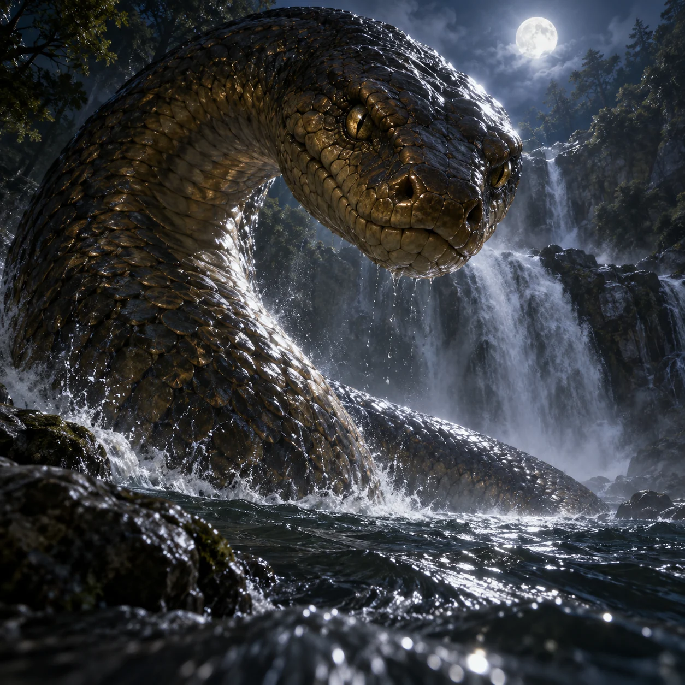
Giant serpent of the Miyazaki protective legend, rising above a pond.
Aura: Awe comes from the giant protective serpent of c03 and its pond setting c02, without invented magic.
Audit ciri dan sumber
- [object Object]
- [object Object]
Inspected native PNG and 200px thumbnail: giant one-headed limbless serpent dominates, rising action is readable, pond spray is physical water displacement, no unsupported magic, no text or borrowed design; all seven Sangar checks pass.
Review sumberONE original square premium painterly cinematic Mitoloka illustration of Jaō Gongen, a Japanese serpent deity, shown as the giant protective snake of the Miyazaki legend.
ANATOMY: exactly one giant snake head, two natural eyes, long thick limbless body with wet dark bronze scales; no horns, fins, wings, legs, jewelry or humanoid features. [jao-gongen-c01, jao-gongen-c03]
MOMENT: rise above the viewer, curving the huge neck protectively across the foreground, head looking sharply down toward camera; body pushes pond water aside.
POWER: no documented visible power; awe through giant anatomy, moving mass and light only. Protective presence [jao-gongen-c03].
SCALE & CAMERA: extreme low angle at waterline; head and thick neck fill most of frame; tiny pond rocks and waterfall behind establish documented giant scale.
LIGHT & WEATHER: one dominant shaft of moonlight, sharp rim light, deep warm shadows, natural waterfall spray.
SURFACE: rough individually readable wet scales, weathered stone, turbulent dark water.
SETTING: a Japanese woodland pond below a waterfall [jao-gongen-c02].
MOOD: sacred, protective, awe-inspiring and overwhelming, never cute, calm or decorative.
HARD CONSTRAINTS: no text, pseudoinscriptions, lettering, logo, border, frame or watermark; no extra heads or limbs; no borrowed film, game, anime or comic design; no nudity or gore; no generic glow aura, neon outline, energy ribbons, magic symbols.
Krivapeta
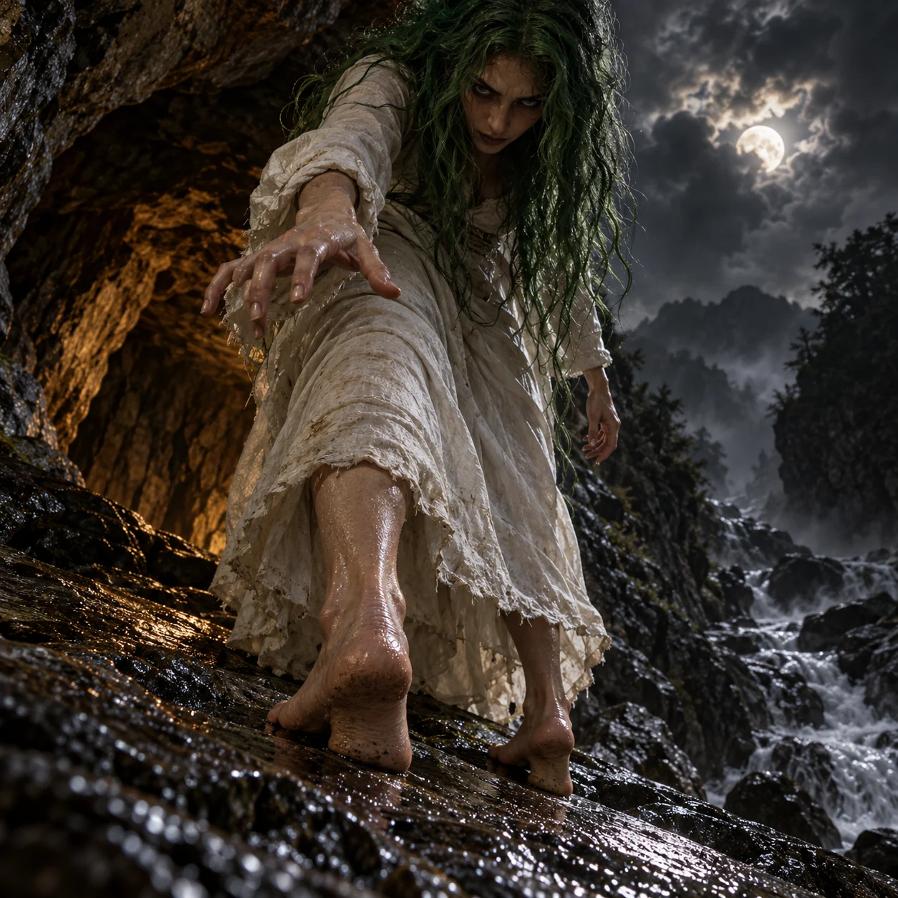
the green-haired white-clad wild woman with reversed feet
Aura: No documented physical power; menace only from reversed-foot anatomy and cruel stalking behavior krivapeta-c06
Audit ciri dan sumber
- [object Object]
- [object Object]
- [object Object]
Native and 200px inspected. Dominant reaching green-haired woman in opaque white; both heels visibly face viewer while torso faces viewer, toes behind; cave and stream visible. Threatening movement, no invented power or text. All seven Sangar checks yes.
Review sumberONE original square premium painterly cinematic Mitoloka illustration of Krivapeta, the green-haired white-clad wild woman with reversed feet.
ANATOMY: One wild woman with green hair covering her shoulders, opaque long white dress, two arms and two legs; both bare feet reversed with heels facing forward and toes backward; full body visible, feet visually unmistakable [c02, c04]
MOMENT: Lurch out of the cave toward the viewer, reaching one hand down, planted reversed feet exposed on slick stone; eyes glare downward. Camera beside her feet so heel-front and toes behind are very clear.
POWER: No documented physical power; menace only from reversed-foot anatomy and cruel stalking behavior [c06]
SCALE & CAMERA: extreme low angle; close foreshortened framing with subject filling most of the square, no invented giant size unless explicitly stated above.
LIGHT & WEATHER: one moon behind storm clouds, sharp rim light, deep shadows; dark walnut and antique gold palette with one strong accent.
SURFACE: matted green hair, worn opaque white linen, wet stone.
SETTING: cave mouth on a steep rocky stream ravine [c02, c10]
MOOD: uncanny and threatening, one of the cruel Krivapete; dangerous or awe-inspiring and imposing, never cute, calm or decorative.
HARD CONSTRAINTS: no text, writing, lettering, inscriptions, pseudoinscriptions, symbols, logo, border, frame or watermark; no extra heads, limbs or fingers; no design borrowed from any film, game, anime or comic; no nudity or explicit gore; no generic glow aura, neon outline or energy ribbons. Entirely original living creature; no statue or toy.
Lobisomem
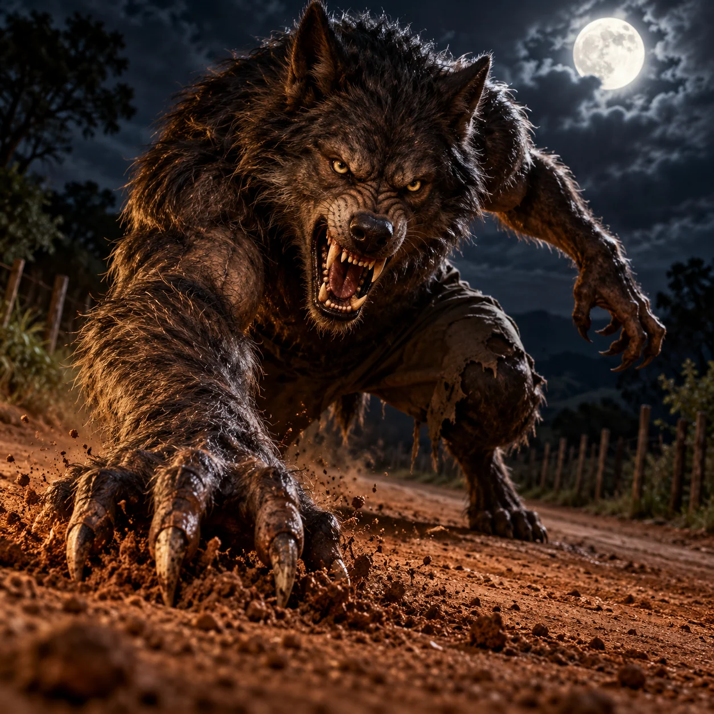
Brazilian werewolf variant lunging along a moonlit road.
Aura: Threat comes from the werewolf form c01 attacking along the road c06.
Audit ciri dan sumber
- [object Object]
- [object Object]
- [object Object]
Native PNG and 200px thumbnail inspected. Subject dominates, active threatening or awe-inspiring moment, claim-mapped anatomy/effects/setting, no text, watermark or generic aura; all seven Sangar checks pass.
Review sumberONE original square premium painterly cinematic Mitoloka illustration of Lobisomem, the Brazilian werewolf of folklore.
ANATOMY: one wolf-man with exactly one snarling wolf head, two wolf ears, two natural eyes, two muscular arms, two digitigrade legs, dense coarse dark fur, long muzzle and visible fangs; opaque plain torn trousers conceal the waist. [lobisomem-c01]
MOMENT: lunge out of the road's darkness toward the viewer, one clawed forehand raking the earth, jaws opened in a threatening snarl, shoulders violently twisted.
POWER: no documented visible magical effect; night attack along a road is the documented action [lobisomem-c06]. Only physical dirt displaced by claws.
SCALE & CAMERA: extreme low ground-level angle, tight framing, forehand and wolf muzzle dominate; normal werewolf bodily scale, not a giant.
LIGHT & WEATHER: one dominant full moon through dark clouds, sharp pale rim light, warm deep shadows, ordinary road dust.
SURFACE: coarse matted fur, dirty claws, rough muzzle skin, worn opaque cloth.
SETTING: rural Brazilian dirt road at full-moon night [lobisomem-c05, lobisomem-c06].
MOOD: dangerous, menacing and imposing, predatory confrontation, never cute, calm or decorative.
HARD CONSTRAINTS: no text, pseudoinscriptions, lettering, logo, border, frame or watermark; no extra heads, limbs or fingers; no design borrowed from film, game, anime or comic; no nudity or explicit gore; no generic glow aura, neon outline, magic symbols or energy ribbons.
Okeus
Menunggu gambar yang lolos audit
Pixiu
Menunggu gambar yang lolos audit
Piztia
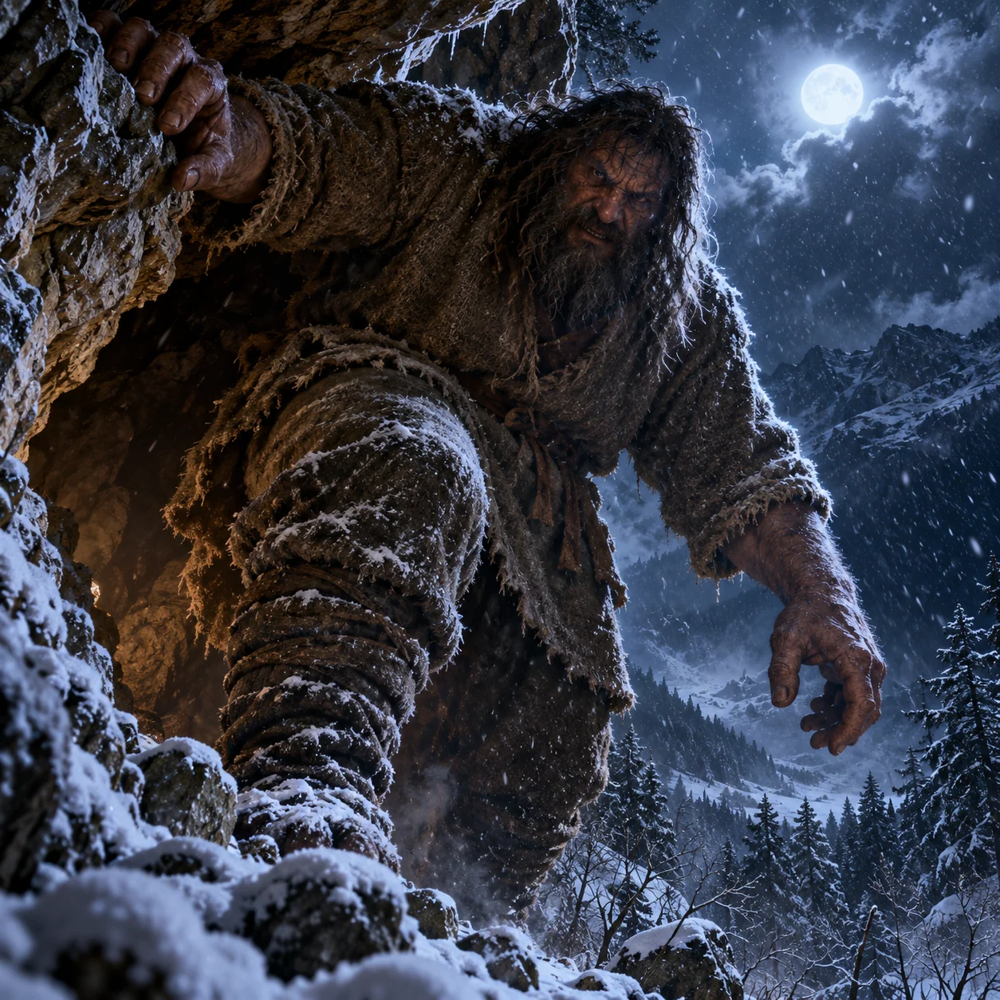
Piztia, selecting the documented giant variant of the Basque night predator
Aura: Threat or awe through documented anatomy ['piztia-c06'] and action ['piztia-c09']; no generic aura.
Audit ciri dan sumber
- [object Object]
- [object Object]
- [object Object]
Native PNG and 200px thumbnail inspected. Subject dominates, active threatening or awe-inspiring moment, claim-mapped anatomy/effects/setting, no text, watermark or generic aura; all seven Sangar checks pass.
Review sumberONE original square premium painterly cinematic Mitoloka illustration of Piztia, selecting the documented giant variant of the Basque night predator.
ANATOMY: One imposing giant humanoid, exactly one head, two natural eyes, two arms and two legs; plain rough opaque wool tunic and trousers; no horns or single eye. [piztia-c06]
MOMENT: Emerge violently from the cave into snowfall, lean down toward the viewer, one huge hand gripping the rock mouth.
POWER: No magical effect; emerging at night in a snowstorm to prey on the valley. [piztia-c09]
SCALE & CAMERA: Extreme low angle; giant fills the frame with small cave rocks and trees providing scale.
LIGHT & WEATHER: one dominant cold moonlight source, sharp rim light, deep warm walnut shadows, natural dust or mist.
SURFACE: tactile coarse weathered surfaces, rich painterly texture, no plastic finish.
SETTING: Cave of Iruratxi crag on Mount Carrascal, Basque wooded mountain valley at snowy night. [piztia-c01, piztia-c02, piztia-c09]
MOOD: menacing or awe-inspiring, dangerous and imposing, never cute, calm or decorative.
HARD CONSTRAINTS: no text, pseudoinscriptions, lettering, logo, border, frame or watermark; no extra heads, limbs or fingers; no design borrowed from film, game, anime or comic; opaque full clothing for humanoids; no nudity or explicit gore; no generic glow aura, neon outline, energy ribbons or magic symbols.
Poubi Lai
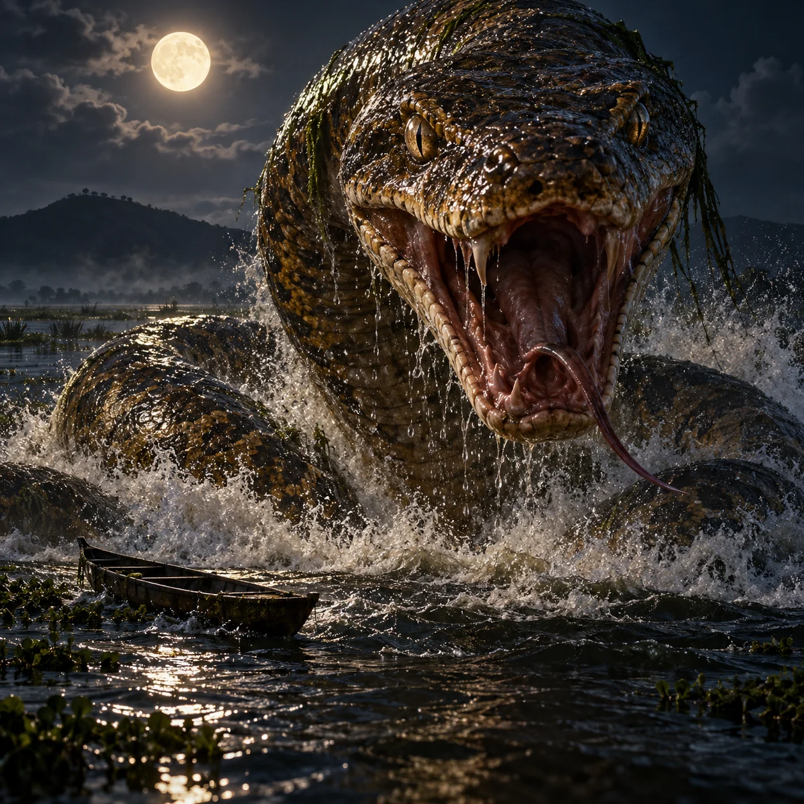
Gigantic limbless python variant in Loktak Lake; not the modern sculpture.
Aura: Gigantic fisherman-preying python creates menace through physical lake emergence [c04,c06].
Audit ciri dan sumber
- [object Object]
- [object Object]
- [object Object]
Native and 200px thumbnail inspected: one giant limbless python lunges from lake, clear predatory action and documented giant scale, no magic effects or additional anatomy, no text; all seven Sangar checks pass.
Review sumberONE original square premium painterly cinematic Mitoloka illustration of Poubi Lai, the gigantic dragon python of Meitei folklore in Loktak Lake.
ANATOMY: one giant python head, two eyes, huge thick coiling limbless snake body, no horns, wings or limbs [poubi-lai-c01, poubi-lai-c06, poubi-lai-c04]
MOMENT: Surge up from the dark lake toward camera, jaws open in a predatory lunge, massive body sending up natural sheets of displaced water
POWER: No documented visible magic; the gigantic evil python threatens fishermen physically [poubi-lai-c04, poubi-lai-c06]
SCALE & CAMERA: extreme low angle; head and upper body occupy most of frame; far below its neck a tiny unoccupied wooden fishing canoe provides giant size comparison
LIGHT & WEATHER: one dominant moonlight source, strong rim light, deep dark warm shadows, natural spray or dust appropriate to setting
SURFACE: rough wet dark ochre scales, lakeweed, black lake water
SETTING: Manipur's Loktak Lake, with low Karang Hill behind [poubi-lai-c01, poubi-lai-c04]
MOOD: menacing, dangerous and imposing, never cute, calm or decorative
HARD CONSTRAINTS: no text, pseudoinscriptions, lettering, logo, border, frame or watermark; no extra heads, limbs or fingers; no borrowed film, game, anime or comic design; no nudity or explicit gore; no generic glow aura, neon outline or energy ribbons.
Prestere
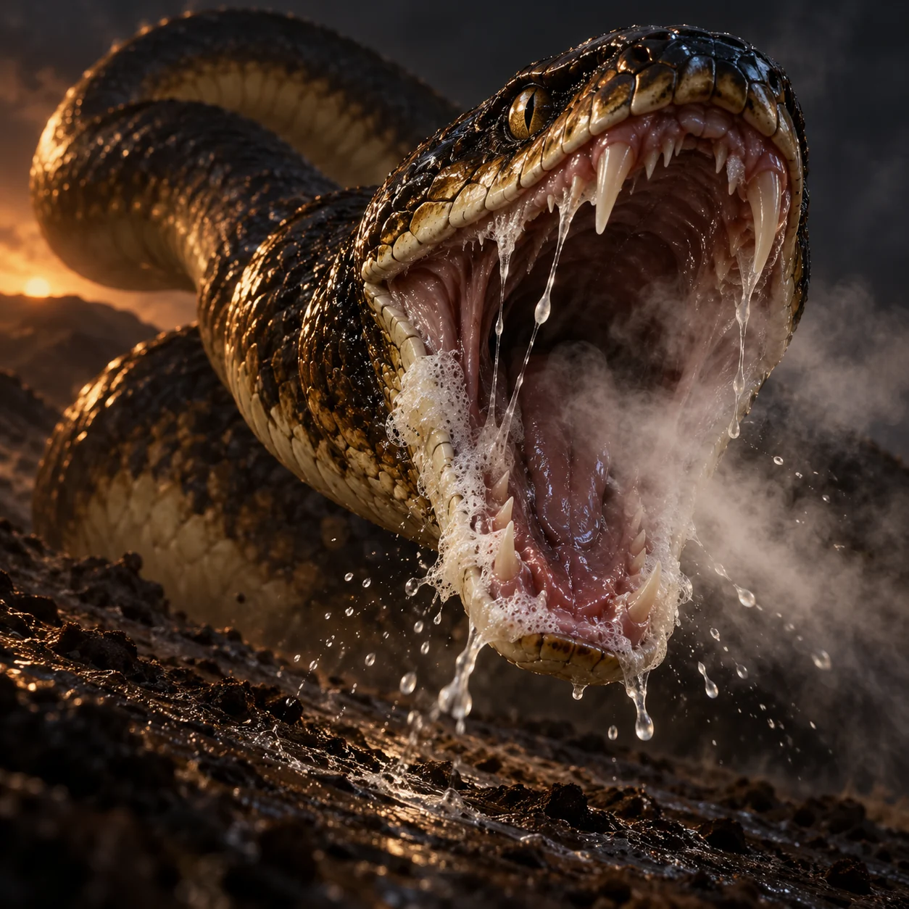
open-mouthed steaming bestiary serpent
Aura: Visible natural vapour and foam from the permanently open mouth, no flames or beams; do not show poisoned victims prestere-c04,prestere-c05
Audit ciri dan sumber
- [object Object]
- [object Object]
- [object Object]
Native and 200px inspected: one limbless serpent surges with wide open foaming steaming jaws. Foam and vapor c04/c05 obvious at thumbnail; no fire, victim, gore, text or extra appendages. All seven Sangar checks yes.
Review sumberONE original square premium painterly cinematic Mitoloka illustration of Prestere, open-mouthed steaming bestiary serpent.
ANATOMY: Exactly one limbless serpent, mouth wide open even while moving, steam and foam visibly coming from jaws; no wings horns or legs [c04, c05]
MOMENT: Surge straight toward viewer with open foaming jaws, the long snake body folding behind it; show hot breath condensing in the cold dark air.
POWER: Visible natural vapour and foam from the permanently open mouth, no flames or beams; do not show poisoned victims [c04, c05]
SCALE & CAMERA: extreme low angle; close foreshortened framing with subject filling most of the square, no invented giant size unless explicitly stated above.
LIGHT & WEATHER: one distant low orange light off-frame, sharp rim light, deep shadows; dark walnut and antique gold palette with one strong accent.
SURFACE: wet granular scales and thick pale foam.
SETTING: Dark bare earth in an indistinct setting; source gives no precise habitat [c01]
MOOD: menacing venomous serpent; dangerous or awe-inspiring and imposing, never cute, calm or decorative.
HARD CONSTRAINTS: no text, writing, lettering, inscriptions, pseudoinscriptions, symbols, logo, border, frame or watermark; no extra heads, limbs or fingers; no design borrowed from any film, game, anime or comic; no nudity or explicit gore; no generic glow aura, neon outline or energy ribbons. Entirely original living creature; no statue or toy.
Pukwudgie
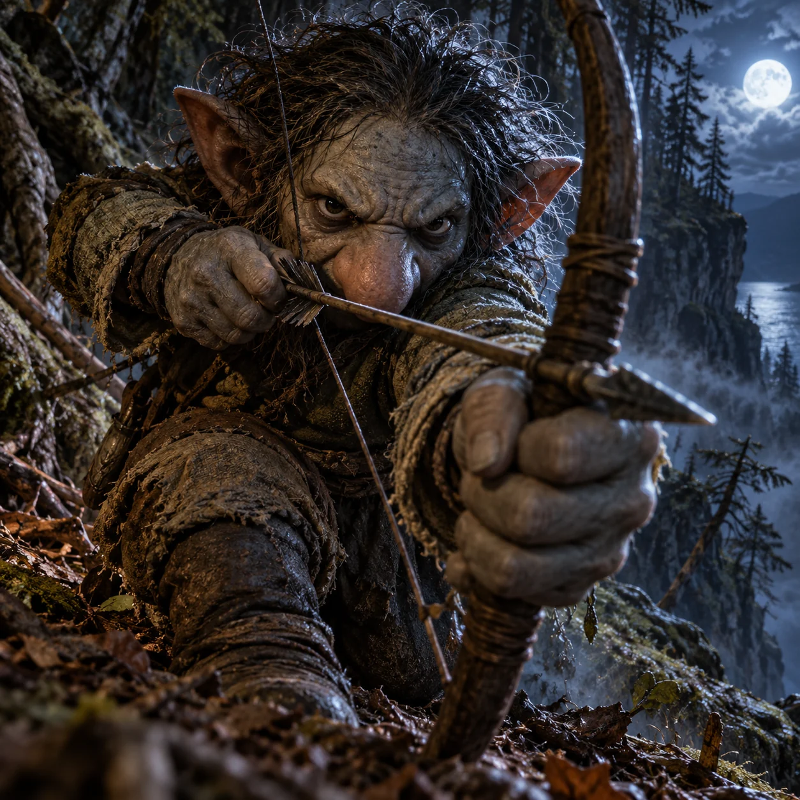
Pukwudgie in its native small humanlike form
Aura: Threat or awe through documented anatomy ['pukwudgie-c01', 'pukwudgie-c04'] and action ['pukwudgie-c08']; no generic aura.
Audit ciri dan sumber
- [object Object]
- [object Object]
- [object Object]
Native PNG and 200px thumbnail inspected. Subject dominates, active threatening or awe-inspiring moment, claim-mapped anatomy/effects/setting, no text, watermark or generic aura; all seven Sangar checks pass.
Review sumberONE original square premium painterly cinematic Mitoloka illustration of Pukwudgie in its native small humanlike form.
ANATOMY: Exactly one knee-high gray-skinned humanoid, two eyes, one very large nose, two oversized ears, two arms with large long fingers, two legs; rough plain opaque tunic and trousers. [pukwudgie-c01, pukwudgie-c04]
MOMENT: Crouch extremely close to the viewer at forest-floor level, glare with fierce concentration, pull a short bow toward camera.
POWER: Poisoned arrows used to menace intruders; no visible supernatural light, no glowing poison. [pukwudgie-c08]
SCALE & CAMERA: Tight low-angle close-up; subject fills frame, no invented giant scale.
LIGHT & WEATHER: one dominant cold moonlight source, sharp rim light, deep warm walnut shadows, natural dust or mist.
SURFACE: tactile coarse weathered surfaces, rich painterly texture, no plastic finish.
SETTING: Massachusetts forest with looming roots and a cliff edge behind. [pukwudgie-c02, pukwudgie-c08]
MOOD: menacing or awe-inspiring, dangerous and imposing, never cute, calm or decorative.
HARD CONSTRAINTS: no text, pseudoinscriptions, lettering, logo, border, frame or watermark; no extra heads, limbs or fingers; no design borrowed from film, game, anime or comic; opaque full clothing for humanoids; no nudity or explicit gore; no generic glow aura, neon outline, energy ribbons or magic symbols.
Purusha
Menunggu gambar yang lolos audit
Qallupilluit
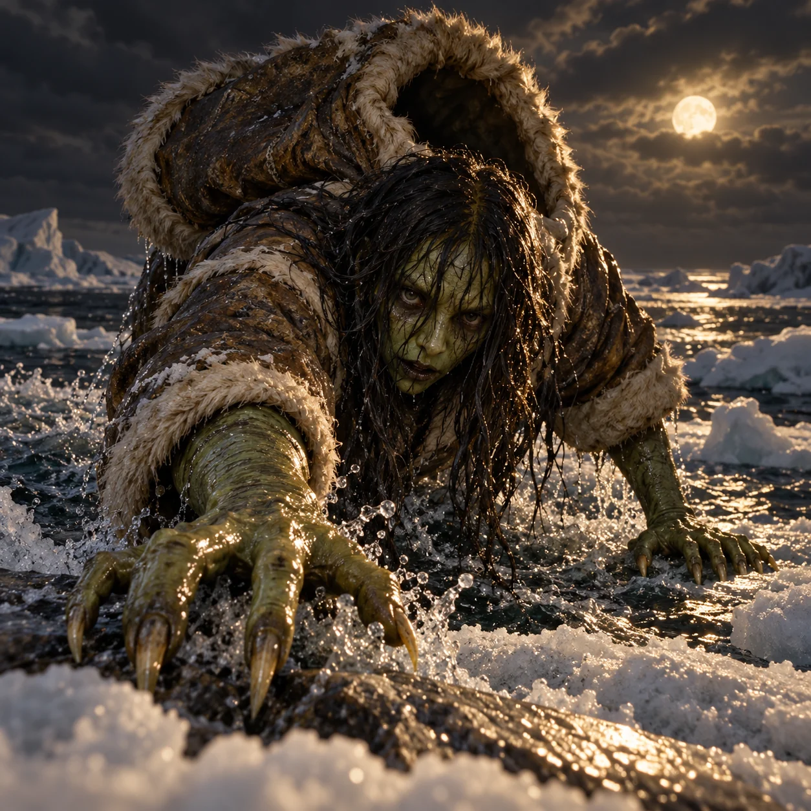
green-skinned long-nailed Arctic amautik wearer
Aura: Reach from the seawater toward the shore; displaced water splashes physically around its hands; child-stealing menace without a depicted victim qallupilluit-c01
Audit ciri dan sumber
- [object Object]
- [object Object]
- [object Object]
Native and 200px inspected. Green slick humanoid reaches from icy water, long nails and hair, opaque amautik with enormous empty hood dominant. Two arms, no extra appendages or text; splashes physical only. All seven Sangar checks yes.
Review sumberONE original square premium painterly cinematic Mitoloka illustration of Qallupilluit, green-skinned long-nailed Arctic amautik wearer.
ANATOMY: One human-shaped shore creature with green slimy skin, long tangled hair, long fingernails, two arms and legs, fully opaque thick amautik parka with an enormous empty rear hood [c03, c04, c05, c06]
MOMENT: Clamber over the nearest ice edge toward viewer, one clawed hand extended, hunched parka shoulder and great empty hood clearly visible.
POWER: Reach from the seawater toward the shore; displaced water splashes physically around its hands; child-stealing menace without a depicted victim [c01]
SCALE & CAMERA: extreme low angle; close foreshortened framing with subject filling most of the square, no invented giant size unless explicitly stated above.
LIGHT & WEATHER: one low moon through arctic cloud, sharp rim light, deep shadows; dark walnut and antique gold palette with one strong accent.
SURFACE: slick green skin, wet matted hair, heavy weathered hide parka, jagged ice.
SETTING: Arctic shore between broken sea-ice floes [c01]
MOOD: menacing and uncanny; dangerous or awe-inspiring and imposing, never cute, calm or decorative.
HARD CONSTRAINTS: no text, writing, lettering, inscriptions, pseudoinscriptions, symbols, logo, border, frame or watermark; no extra heads, limbs or fingers; no design borrowed from any film, game, anime or comic; no nudity or explicit gore; no generic glow aura, neon outline or energy ribbons. Entirely original living creature; no statue or toy.
Qiongqi
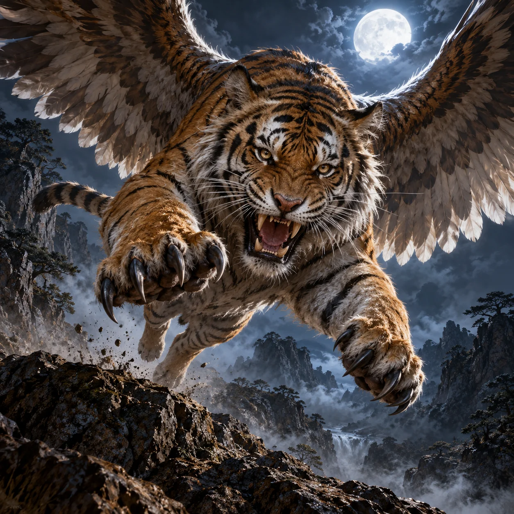
Qiongqi, the winged tiger variant from the Shanhaijing
Aura: Threat or awe through documented anatomy ['qiongqi-c06'] and action ['qiongqi-c06']; no generic aura.
Audit ciri dan sumber
- [object Object]
- [object Object]
- [object Object]
Native PNG and 200px thumbnail inspected. Subject dominates, active threatening or awe-inspiring moment, claim-mapped anatomy/effects/setting, no text, watermark or generic aura; all seven Sangar checks pass.
Review sumberONE original square premium painterly cinematic Mitoloka illustration of Qiongqi, the winged tiger variant from the Shanhaijing.
ANATOMY: Exactly one living tiger with one head, two eyes, four feline legs, one tail and two large feathered wings emerging from its shoulders; no ox anatomy, no horns or hedgehog bristles. [qiongqi-c06]
MOMENT: Pounce toward the viewer from a rocky ledge, wings beating open, jaws snarling and front paws foreshortened.
POWER: No documented magical effect; physical predatory flight and attack only, no victim or gore. [qiongqi-c06]
SCALE & CAMERA: Tight low-angle close-up; subject fills frame, no invented giant scale.
LIGHT & WEATHER: one dominant cold moonlight source, sharp rim light, deep warm walnut shadows, natural dust or mist.
SURFACE: tactile coarse weathered surfaces, rich painterly texture, no plastic finish.
SETTING: Dark rocky wilderness north of Taoquan. [qiongqi-c06]
MOOD: menacing or awe-inspiring, dangerous and imposing, never cute, calm or decorative.
HARD CONSTRAINTS: no text, pseudoinscriptions, lettering, logo, border, frame or watermark; no extra heads, limbs or fingers; no design borrowed from film, game, anime or comic; opaque full clothing for humanoids; no nudity or explicit gore; no generic glow aura, neon outline, energy ribbons or magic symbols.
Queensland tiger
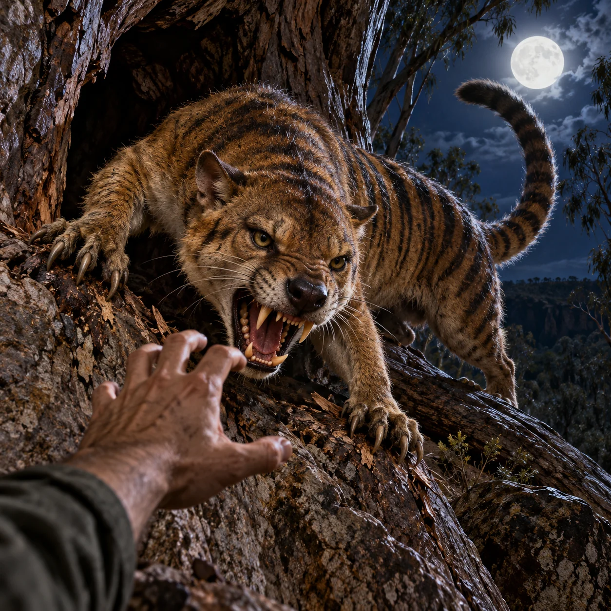
Savage striped dog-sized feline with short legs, long tail and climbing behavior.
Aura: Menace comes from the savage growling biting yarri c12/c13 at close range, without unsupported powers.
Audit ciri dan sumber
- [object Object]
- [object Object]
- [object Object]
Attempt02 native and 200px inspected: adult dingo-size short-legged striped feline threatens recoiling adult hand, long tail and tree-clinging posture clear, no passive cub pose. No magic/gore/text. Seven Sangar checks pass on physical predatory confrontation; root review requested.
Review sumberONE original square premium painterly cinematic Mitoloka illustration of Queensland tiger, the savage dingo-sized striped feline cryptid called yarri.
ANATOMY: exactly one head, two eyes, four short sturdy legs and one long tail, a dog-sized striped feline rather than tiger, distinctly short legs and mature broad-snouted marsupial-cat proportions, adult elongated skull and small ears, NOT a tiger cub, NOT kitten round face, NOT tiger cheek ruff, no horns or invented powers [queensland-tiger-c02,c12] [queensland-tiger-c02, queensland-tiger-c12, queensland-tiger-c13, queensland-tiger-c14]
MOMENT: Explode out of a rocky tree hollow to snap at an adult human hand and forearm recoiling in the near foreground; no contact and no blood. Fully adult savage animal, about dingo size, muscular low-slung long body, distinctly short legs, unnaturally tenacious climbing stance. Long tail curves high behind. Teeth are inches from that human hand. Claws visibly tear bark.
POWER: No supernatural effects. Documented tree-climbing, growling and biting behavior only [queensland-tiger-c13]
SCALE & CAMERA: extreme low angle; low close view of a whole adult dingo-sized long-bodied short-legged animal in a tree, human adult hand and forearm give explicit real scale, no giant size
LIGHT & WEATHER: one dominant moonlight source, strong rim light, deep dark warm shadows, natural spray or dust appropriate to setting
SURFACE: coarse rain-matted ochre striped fur, wet nose, scarred bark, gritty stone
SETTING: a rocky retreat in Northern Queensland scrub woodland [queensland-tiger-c14]
MOOD: menacing, dangerous and imposing, never cute, calm or decorative
HARD CONSTRAINTS: no text, pseudoinscriptions, lettering, logo, border, frame or watermark; no extra heads, limbs or fingers; no borrowed film, game, anime or comic design; no nudity or explicit gore; no generic glow aura, neon outline or energy ribbons.
Raijū
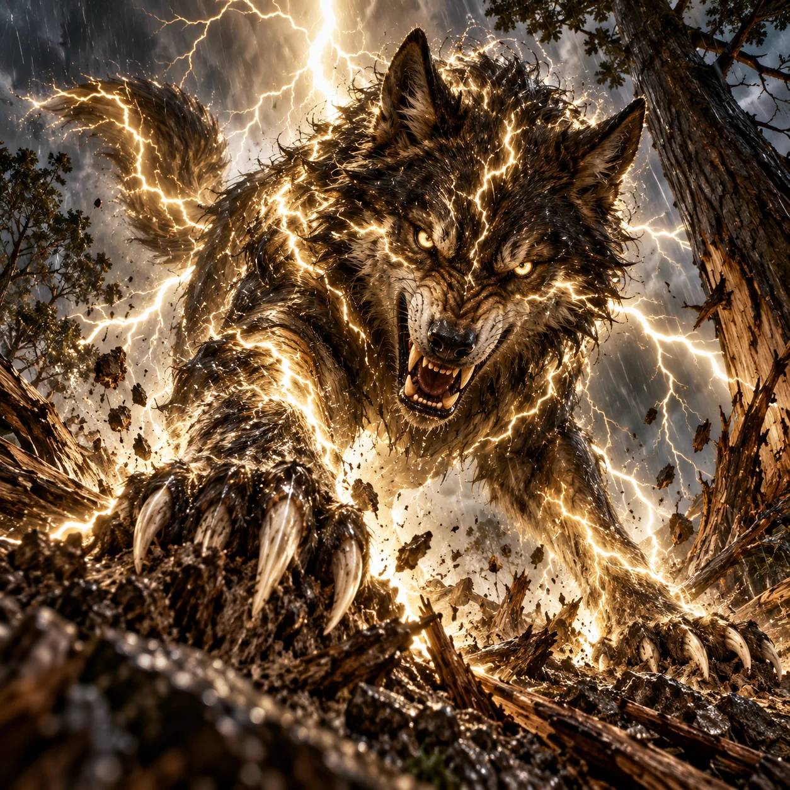
wolf-form lightning embodiment
Aura: Ride a jagged lightning bolt down into earth; one connected white-gold electrical strike tears bark and throws dirt where paws land, electricity remains branching lightning not ribbons raiju-c02,raiju-c05,raiju-c10
Audit ciri dan sumber
- [object Object]
- [object Object]
- [object Object]
Native and 200px inspected. Fierce wolf-like four-limbed beast descends through branching lightning c05/c10, long claws rake earth and bark. Lightning is documented body manifestation, no energy ribbons. No text or extra heads. All seven Sangar checks yes.
Review sumberONE original square premium painterly cinematic Mitoloka illustration of Raijū, wolf-form lightning embodiment.
ANATOMY: One wolf-like thunder beast with exactly one ferocious wolf head, two ears, two eyes, four legs, long sharp claws and one tail; physical lightning wrapping its fur [c05, c07, c08]
MOMENT: Crash toward viewer on a lightning strike, foreclaws extended and mouth snarling, landing at the base of a tree.
POWER: Ride a jagged lightning bolt down into earth; one connected white-gold electrical strike tears bark and throws dirt where paws land, electricity remains branching lightning not ribbons [c02, c05, c10]
SCALE & CAMERA: extreme low angle; close foreshortened framing with subject filling most of the square, no invented giant size unless explicitly stated above.
LIGHT & WEATHER: one blinding white-gold lightning strike, sharp rim light, deep shadows; dark walnut and antique gold palette with one strong accent.
SURFACE: rain-clumped coarse dark fur, ivory claws, soaked bark.
SETTING: Storm sky meeting earth with a tree below [c09, c10, c15]
MOOD: awe-inspiring divine thunder beast, fierce; dangerous or awe-inspiring and imposing, never cute, calm or decorative.
HARD CONSTRAINTS: no text, writing, lettering, inscriptions, pseudoinscriptions, symbols, logo, border, frame or watermark; no extra heads, limbs or fingers; no design borrowed from any film, game, anime or comic; no nudity or explicit gore; no generic glow aura, neon outline or energy ribbons. Entirely original living creature; no statue or toy.
Red Ghost (folklore)
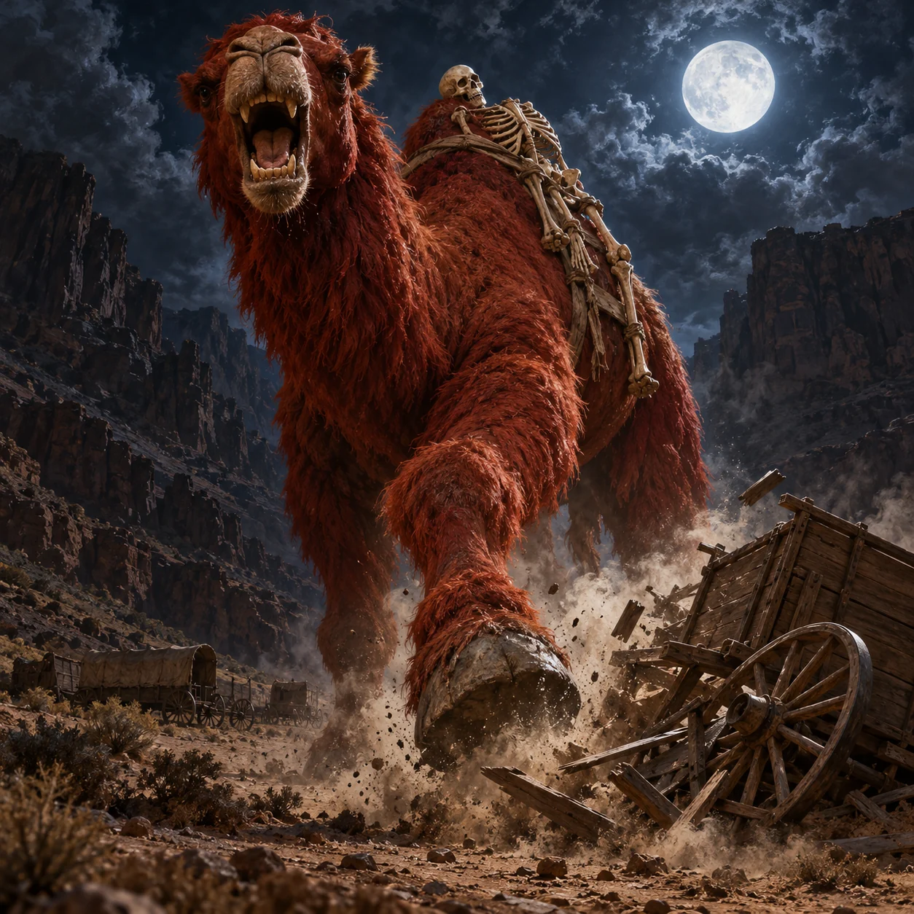
Red Ghost, the enormous red camel with a bleached skeleton strapped to its back
Aura: Threat or awe through documented anatomy ['red-ghost-folklore-c02', 'red-ghost-folklore-c08'] and action ['red-ghost-folklore-c15']; no generic aura.
Audit ciri dan sumber
- [object Object]
- [object Object]
- [object Object]
Native PNG and 200px thumbnail inspected. Subject dominates, active threatening or awe-inspiring moment, claim-mapped anatomy/effects/setting, no text, watermark or generic aura; all seven Sangar checks pass.
Review sumberONE original square premium painterly cinematic Mitoloka illustration of Red Ghost, the enormous red camel with a bleached skeleton strapped to its back.
ANATOMY: Exactly one large red camel with one head, two eyes, four legs, a single hump, shaggy rust-red fur; exactly one complete bleached human skeleton strapped onto its back with plain rawhide, no blood or tissue. [red-ghost-folklore-c02, red-ghost-folklore-c08]
MOMENT: Charge directly toward viewer, open its mouth and swing one heavy foreleg forward, tumble an empty wooden wagon aside.
POWER: The documented thirty-foot sighting knocks over wagons; show real physical impact and dust, no aura. [red-ghost-folklore-c15]
SCALE & CAMERA: Extreme low angle, thirty-foot camel dominates, tiny empty wagon makes scale unmistakable.
LIGHT & WEATHER: one dominant cold moonlight source, sharp rim light, deep warm walnut shadows, natural dust or mist.
SURFACE: tactile coarse weathered surfaces, rich painterly texture, no plastic finish.
SETTING: Arizona frontier desert, dark canyon terrain with empty wooden wagons. [red-ghost-folklore-c01, red-ghost-folklore-c11]
MOOD: menacing or awe-inspiring, dangerous and imposing, never cute, calm or decorative.
HARD CONSTRAINTS: no text, pseudoinscriptions, lettering, logo, border, frame or watermark; no extra heads, limbs or fingers; no design borrowed from film, game, anime or comic; opaque full clothing for humanoids; no nudity or explicit gore; no generic glow aura, neon outline, energy ribbons or magic symbols.
Ro-langs
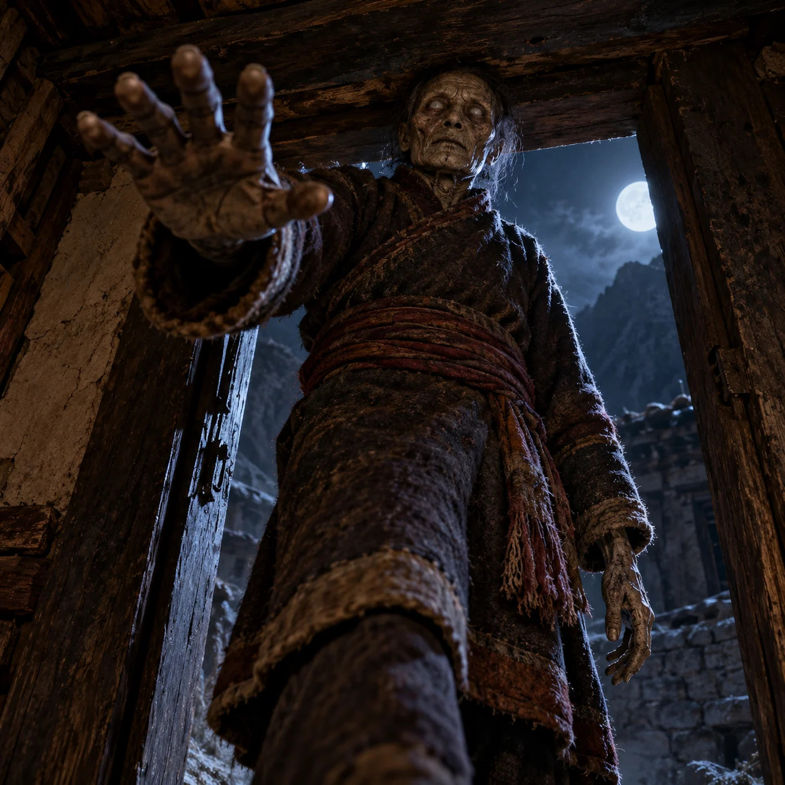
Independent contaminating stiff corpse reaching with its palm rather than biting.
Aura: Dead rigid anatomy c04 and palm-on-head attack c08 produce menace without invented effects.
Audit ciri dan sumber
- [object Object]
- [object Object]
- [object Object]
Native and 200px inspected: clearly dead desiccated corpse with rigid upright body, straight outstretched palm dominates, no bite or gore. Documented low doorway, stiff motion and attack remain readable. No text, effects or extra anatomy; seven Sangar checks pass.
Review sumberONE original square premium painterly cinematic Mitoloka illustration of Ro-langs, a stiff-jointed risen corpse from Tibetan folklore.
ANATOMY: one human corpse head, two opaque dead eyes, two rigid arms and two rigid legs, whole body unnaturally straight, ashen desiccated face without wounds, fully opaque worn Tibetan wool robe and trousers, no exposed gore [ro-langs-c01,c04] [ro-langs-c01, ro-langs-c04, ro-langs-c11, ro-langs-c08, ro-langs-c09]
MOMENT: Advance bolt upright through a doorway without bending waist or joints, thrusting one rigid open palm toward the top of viewer's head, other arm held straight, dead intent gaze, no biting
POWER: The animated corpse attacks by placing its palm on a victim's head [ro-langs-c08]; depict that reaching action without any invented glow or magic beam
SCALE & CAMERA: extreme low angle; tight low-angle looming close view emphasizes impossible stiff corpse posture; no giant size
LIGHT & WEATHER: one dominant moonlight source, strong rim light, deep dark warm shadows, natural spray or dust appropriate to setting
SURFACE: dry cracked corpse skin, dead dull eyes, coarse weathered wool, rough dark timber
SETTING: a low-ceiling Tibetan building with a low door frame that the creature cannot bend beneath [ro-langs-c09,ro-langs-c11]
MOOD: menacing, dangerous and imposing, never cute, calm or decorative
HARD CONSTRAINTS: no text, pseudoinscriptions, lettering, logo, border, frame or watermark; no extra heads, limbs or fingers; no borrowed film, game, anime or comic design; no nudity or explicit gore; no generic glow aura, neon outline or energy ribbons.
Sankai
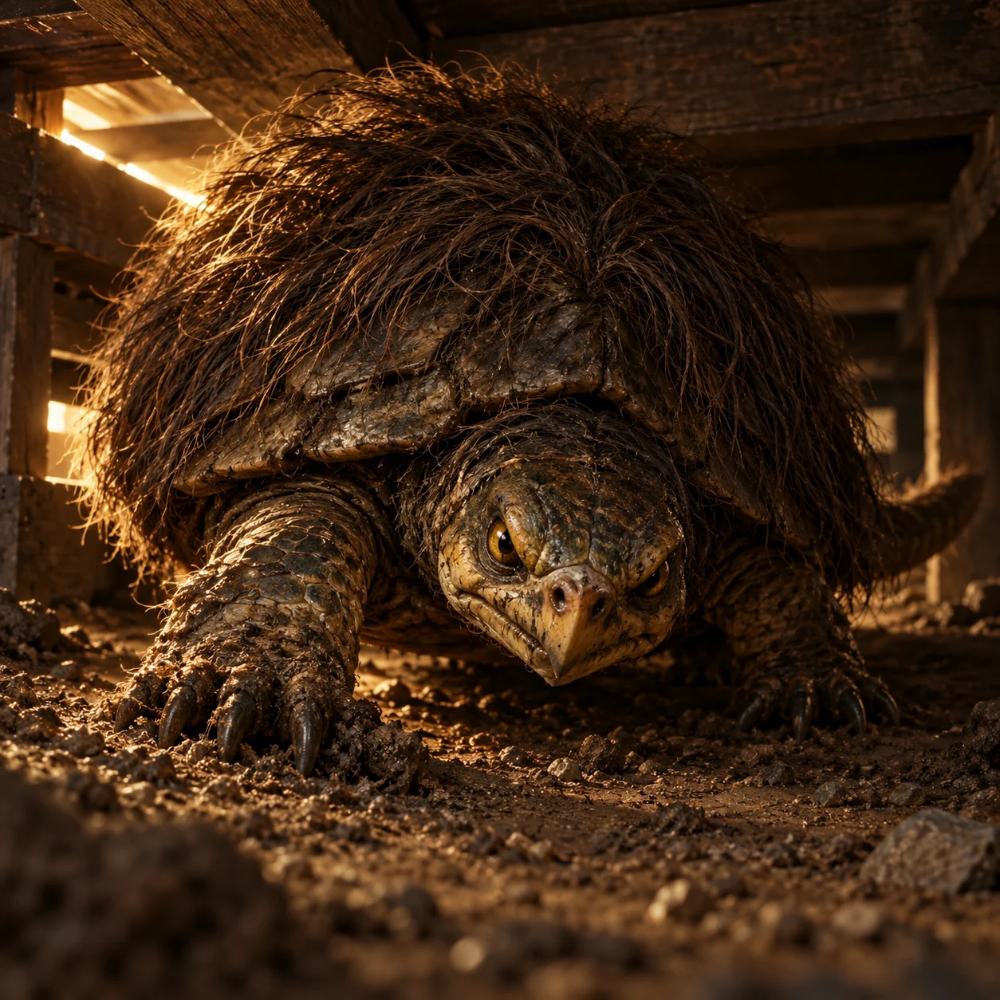
Okayama oketsu turtle-with-hairy-back variant
Aura: No visible magical power; it crawls beneath a house, disturbed dirt only sankai-c05,sankai-c07
Audit ciri dan sumber
- [object Object]
- [object Object]
- [object Object]
Native and200 inspected. Small hairy-backed turtle monster advances beneath beams; impossible hairy shell unmistakable, hostile stare and planted digging claw convey motion. No body-size invention, infant, blood, magic, text or extra limbs. All seven Sangar yes.
Review sumberONE original square premium painterly cinematic Mitoloka illustration of Sankai, Okayama oketsu turtle-with-hairy-back variant.
ANATOMY: One small turtle-like monster with hair growing densely over its back, one head, one shell, four short clawed legs and one tail; no human infant anatomy [c04]
MOMENT: Scrabble toward the viewer from under a rough timber beam, foreclaws digging grit, hairy shell filling upper frame, head craned forward in a hostile stare.
POWER: No visible magical power; it crawls beneath a house, disturbed dirt only [c05, c07]
SCALE & CAMERA: extreme low angle; close foreshortened framing with subject filling most of the square, no invented giant size unless explicitly stated above.
LIGHT & WEATHER: single low warm light leaking through floorboard gap, sharp rim light, deep shadows; dark walnut and antique gold palette with one strong accent.
SURFACE: matted coarse hair over rough shell plates, earth-caked claws.
SETTING: Cramped dark crawlspace directly beneath a timber house [c05]
MOOD: uncanny threatening oketsu; dangerous or awe-inspiring and imposing, never cute, calm or decorative.
HARD CONSTRAINTS: no text, writing, lettering, inscriptions, pseudoinscriptions, symbols, logo, border, frame or watermark; no extra heads, limbs or fingers; no design borrowed from any film, game, anime or comic; no nudity or explicit gore; no generic glow aura, neon outline or energy ribbons. Entirely original living creature; no statue or toy.
Satyrus (ape)
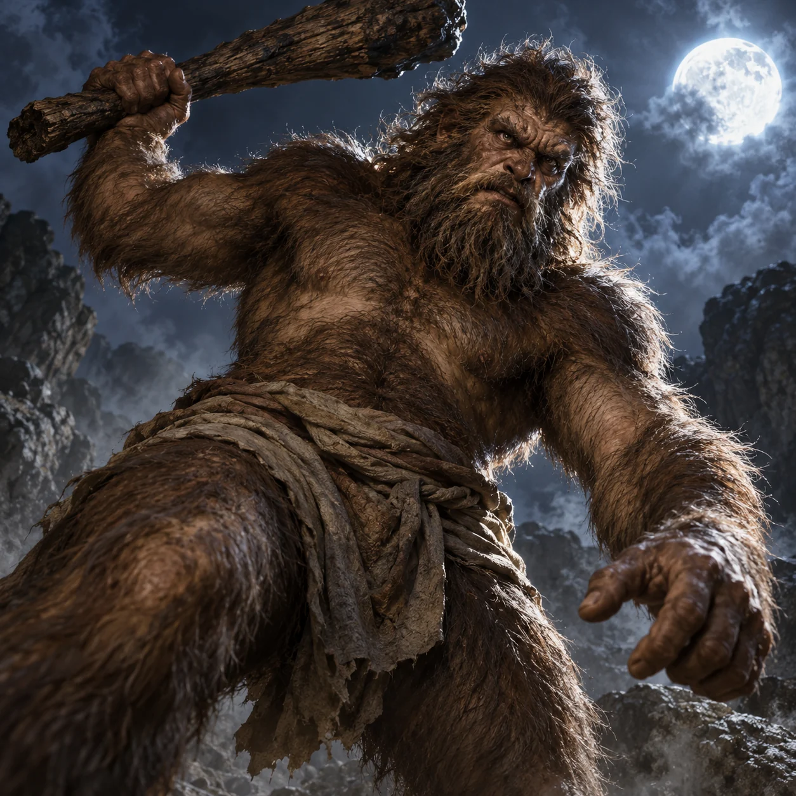
Satyrus, the bearded manlike ape of medieval bestiaries
Aura: Threat or awe through documented anatomy ['satyrus-ape-c04', 'satyrus-ape-c05', 'satyrus-ape-c06'] and action []; no generic aura.
Audit ciri dan sumber
- [object Object]
- [object Object]
Native PNG and 200px thumbnail inspected. Subject dominates, active threatening or awe-inspiring moment, claim-mapped anatomy/effects/setting, no text, watermark or generic aura; all seven Sangar checks pass.
Review sumberONE original square premium painterly cinematic Mitoloka illustration of Satyrus, the bearded manlike ape of medieval bestiaries.
ANATOMY: Exactly one hairy bearded ape with a manlike torso, one head, two eyes, two arms and two legs, dense coarse fur and plain opaque waist wrap; holds one heavy rough wooden club; no goat features. [satyrus-ape-c04, satyrus-ape-c05, satyrus-ape-c06]
MOMENT: Burst forward with exaggerated wild gesticulation, raise the wooden club over shoulder, fiercely stare down toward the viewer.
POWER: No documented magic; wild gesticulation and physical club threat only. []
SCALE & CAMERA: Tight low-angle close-up; subject fills frame, no invented giant scale.
LIGHT & WEATHER: one dominant cold moonlight source, sharp rim light, deep warm walnut shadows, natural dust or mist.
SURFACE: tactile coarse weathered surfaces, rich painterly texture, no plastic finish.
SETTING: An indistinct dark rocky wilderness; no invented specific architecture or mythic habitat. [satyrus-ape-c06]
MOOD: menacing or awe-inspiring, dangerous and imposing, never cute, calm or decorative.
HARD CONSTRAINTS: no text, pseudoinscriptions, lettering, logo, border, frame or watermark; no extra heads, limbs or fingers; no design borrowed from film, game, anime or comic; opaque full clothing for humanoids; no nudity or explicit gore; no generic glow aura, neon outline, energy ribbons or magic symbols.
Seere
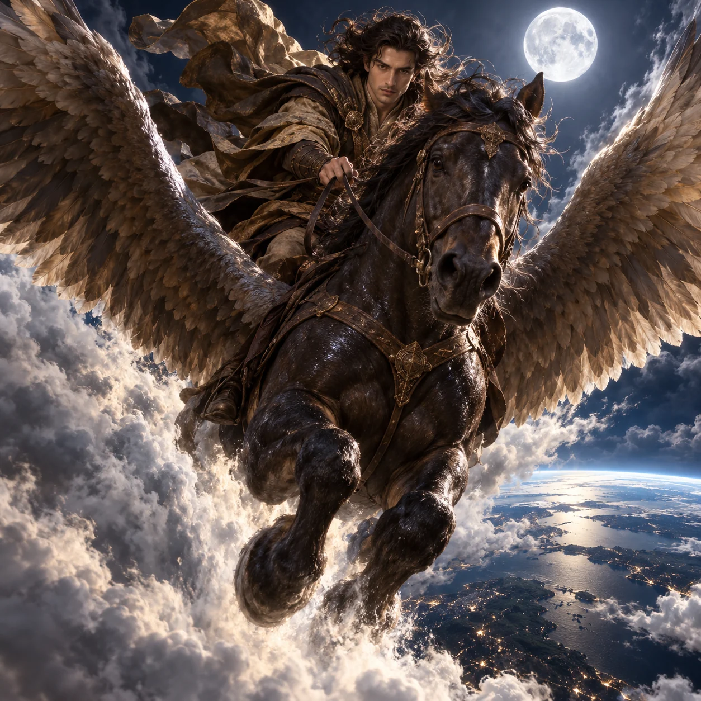
Handsome princely rider on winged horse, rapid crossing above Earth.
Aura: World-crossing speed c04/c06 and winged horse c03 physically tear cloud, no invented magic.
Audit ciri dan sumber
- [object Object]
- [object Object]
- [object Object]
- [object Object]
Native and 200px inspected: handsome rider and one winged horse dominate during descending flight, two wings and normal limb arrangement with rear limbs naturally occluded by clouds. Earth-crossing action and torn clouds readable. No aura/text/extra anatomy; all seven Sangar checks pass.
Review sumberONE original square premium painterly cinematic Mitoloka illustration of Seere, the handsome Goetic prince who rides a winged horse and crosses Earth in an instant.
ANATOMY: one handsome adult man, one head, two eyes, two arms and legs, fully covered in plain opaque weathered noble robes with no writing; riding one powerful winged horse with one head, two eyes, four legs and two huge feathered wings, no horns or extra anatomy [seere-c03,seere-c05] [seere-c03, seere-c05, seere-c04, seere-c06, seere-c07]
MOMENT: Descend almost into the camera as the horse drives a vast wingbeat, rider leaning forward and controlling the reins, eyes focused on viewer, robes snapped violently by passage
POWER: His instant passage across Earth [seere-c04,seere-c06] is shown as wind-blasted low cloud physically torn open by the rushing winged mount, no portals, glowing aura or energy trails
SCALE & CAMERA: extreme low angle; winged horse and rider fill the square, horse chest and feathered wings dominate foreground; distant curvature of the earthly horizon below implies rapid world-spanning journey without gigantic bodily scale
LIGHT & WEATHER: one dominant moonlight source, strong rim light, deep dark warm shadows, natural spray or dust appropriate to setting
SURFACE: dark wet horse coat, layered rough tawny feathers, worn bronze-toned cloth and leather reins
SETTING: above Earth during his rapid crossing [seere-c04,seere-c06]
MOOD: awe-inspiring, formidable and princely, morally indifferent good-natured spirit rather than monstrous evil [seere-c07]
HARD CONSTRAINTS: no text, pseudoinscriptions, lettering, logo, border, frame or watermark; no extra heads, limbs or fingers; no borrowed film, game, anime or comic design; no nudity or explicit gore; no generic glow aura, neon outline or energy ribbons.
Seiryū Gongen
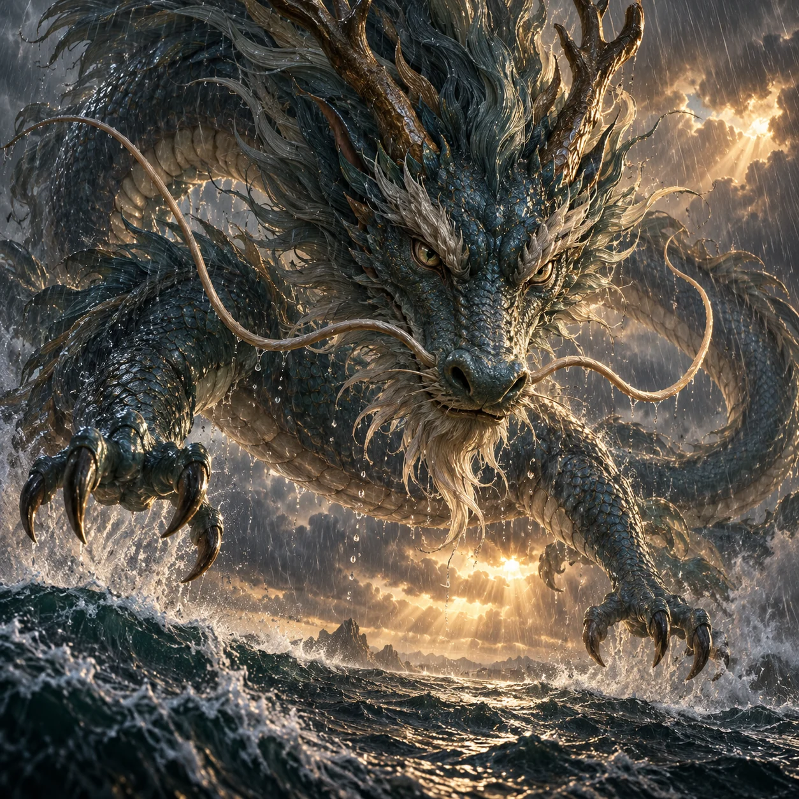
female dragon guardian manifesting over a rain-swept sea
Aura: Rain pours in dense moving sheets around the rain-invoked dragon, drops beat and splash the sea beneath her; no energy aura seiryu-gongen-c06
Audit ciri dan sumber
- [object Object]
- [object Object]
- [object Object]
Native and200 inspected: one serpentine East Asian dragon guardian descends through rain over sea. Two eyes one head and four-limbed structure, rear limb partly occluded by coil. Physical rain c06, no aura or text. Reverent imposing rather than demonic. All seven Sangar yes.
Review sumberONE original square premium painterly cinematic Mitoloka illustration of Seiryū Gongen, female dragon guardian manifesting over a rain-swept sea.
ANATOMY: One female East Asian dragon deity as a living long serpentine dragon, one head, two eyes, four clawed limbs; no humanoid rider or extra dragon heads [c02, c05]
MOMENT: Descend through the rain toward the viewer with head dominating foreground, long body coiling behind, foreclaws braced against wind, rain sweeping down over the sea.
POWER: Rain pours in dense moving sheets around the rain-invoked dragon, drops beat and splash the sea beneath her; no energy aura [c06]
SCALE & CAMERA: extreme low angle; close foreshortened framing with subject filling most of the square, no invented giant size unless explicitly stated above.
LIGHT & WEATHER: one low gold break in heavy raincloud, sharp rim light, deep shadows; dark walnut and antique gold palette with one strong accent.
SURFACE: wet dark blue-green scales, coarse whiskers, water droplets.
SETTING: Sea crossing toward Japan, dark water beneath dragon, no invented temple details [c03, c04]
MOOD: reverent awe-inspiring Buddhist guardian, protective rather than evil; dangerous or awe-inspiring and imposing, never cute, calm or decorative.
HARD CONSTRAINTS: no text, writing, lettering, inscriptions, pseudoinscriptions, symbols, logo, border, frame or watermark; no extra heads, limbs or fingers; no design borrowed from any film, game, anime or comic; no nudity or explicit gore; no generic glow aura, neon outline or energy ribbons. Entirely original living creature; no statue or toy.
Serpente regolo
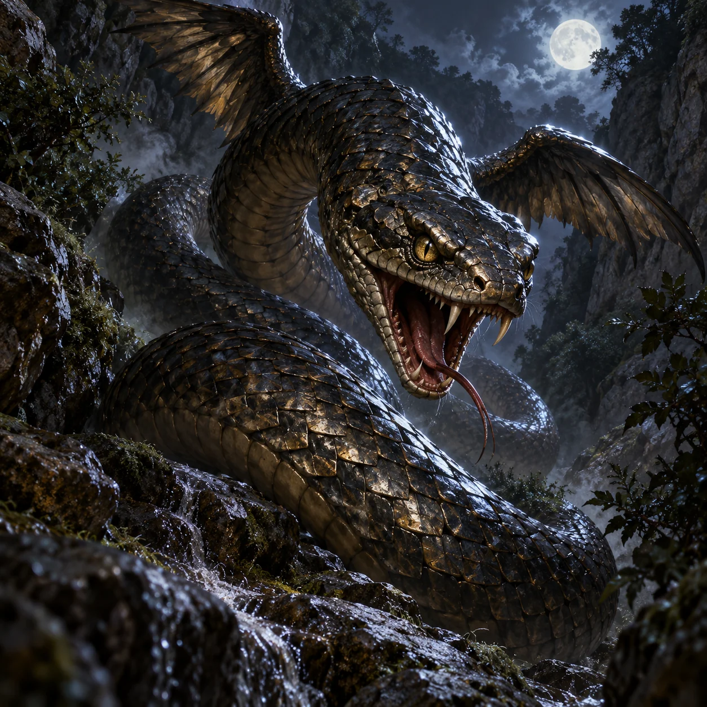
Serpente regolo, the Italian metal-scaled winged serpent
Aura: Threat or awe through documented anatomy ['serpente-regolo-c01', 'serpente-regolo-c05'] and action []; no generic aura.
Audit ciri dan sumber
- [object Object]
- [object Object]
Native PNG and 200px thumbnail inspected. Subject dominates, active threatening or awe-inspiring moment, claim-mapped anatomy/effects/setting, no text, watermark or generic aura; all seven Sangar checks pass.
Review sumberONE original square premium painterly cinematic Mitoloka illustration of Serpente regolo, the Italian metal-scaled winged serpent.
ANATOMY: Exactly one large serpent, one reptile head the size of a child's head, two natural eyes, a long thick limbless coiling body, exactly two small wings; scales shine like dark metal. No crown or human face. [serpente-regolo-c01, serpente-regolo-c05]
MOMENT: Rear out of a narrow gorge toward viewer, twist heavy coils across wet stone, bare sharp serpent teeth.
POWER: No documented visible supernatural power; ordinary movement through stones only. []
SCALE & CAMERA: Tight low-angle close-up; subject fills frame, no invented giant scale.
LIGHT & WEATHER: one dominant cold moonlight source, sharp rim light, deep warm walnut shadows, natural dust or mist.
SURFACE: tactile coarse weathered surfaces, rich painterly texture, no plastic finish.
SETTING: A dark mountain gorge and dense thickets in central Italy. [serpente-regolo-c01]
MOOD: menacing or awe-inspiring, dangerous and imposing, never cute, calm or decorative.
HARD CONSTRAINTS: no text, pseudoinscriptions, lettering, logo, border, frame or watermark; no extra heads, limbs or fingers; no design borrowed from film, game, anime or comic; opaque full clothing for humanoids; no nudity or explicit gore; no generic glow aura, neon outline, energy ribbons or magic symbols.
Shen (clam-monster)
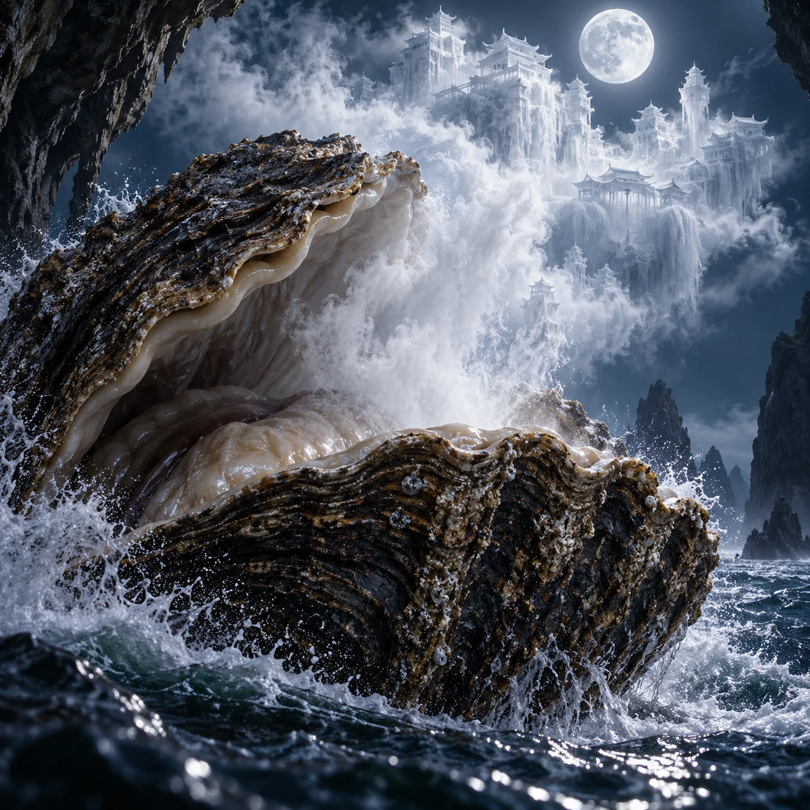
Large living shellfish variant exhaling palace mirages, not the serpent/crocodile variant.
Aura: The shell-monster's documented vapor becomes overwhelming towers and terraces [c06,c09], no generic aura.
Audit ciri dan sumber
- [object Object]
- [object Object]
- [object Object]
Native and 200px inspected: large two-valve living shellfish dominates and gapes actively; its dense exhalation becomes unmistakable palace mirages connected to the shell. No invented eyes/teeth/limbs, no text, no generic aura. All seven Sangar checks pass.
Review sumberONE original square premium painterly cinematic Mitoloka illustration of Shen, the Chinese sea clam-monster whose breath appears to mariners as palaces.
ANATOMY: one enormous-looking large living clam shellfish in extreme close view, two rugged hinged shell valves gaping upward, dark wet fleshy mantle within; no eyes, teeth, arms, legs or other invented anatomy, no dragon parts in this shellfish variant [shen-clam-monster-c01,shen-clam-monster-c04] [shen-clam-monster-c01, shen-clam-monster-c04, shen-clam-monster-c06, shen-clam-monster-c09, shen-clam-monster-c08]
MOMENT: Heave the upper shell open toward camera and expel dense frothy breath upward, seawater splashing from the shell's ridges
POWER: Dense natural-looking white vapor physically billows from the open clam and forms translucent mirage towers, terraces and palace roof silhouettes above the sea, visibly connected to the exhalation [shen-clam-monster-c06,shen-clam-monster-c09]; no neon or runes
SCALE & CAMERA: extreme low angle; clam shell fills lower two-thirds of square at very close waterline, mirage towers loom immediately above without obscuring animal; no human scale comparison or invented size
LIGHT & WEATHER: one dominant moonlight source, strong rim light, deep dark warm shadows, natural spray or dust appropriate to setting
SURFACE: jagged mineral-crusted dark walnut shell, wet pearly mantle, salt foam, cold vapor
SETTING: mouth of a submarine sea grotto, open dark sea and distant uninscribed mirage architecture [shen-clam-monster-c08,shen-clam-monster-c09]
MOOD: uncanny, dangerous and awe-inspiring, never a decorative pearl shell or calm still life
HARD CONSTRAINTS: no text, pseudoinscriptions, lettering, logo, border, frame or watermark; no extra heads, limbs or fingers; no borrowed film, game, anime or comic design; no nudity or explicit gore; no generic glow aura, neon outline or energy ribbons.
Shibaemon-tanuki
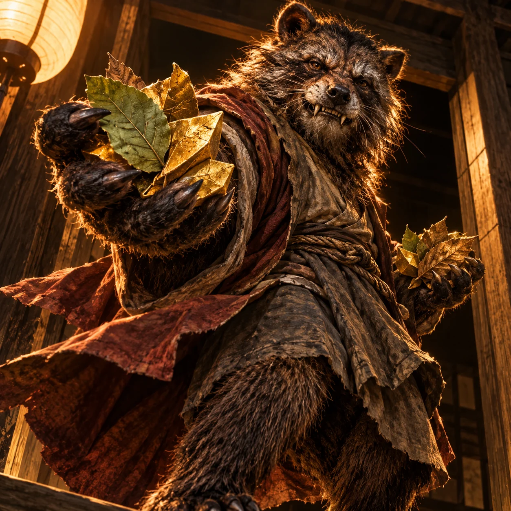
tanuki trickster using leaf-to-gold transformation
Aura: Transform plain tree leaves in his paws into unmarked gold pieces; show leaf on one side and solid folded gold on other, no runes, letters or luminous energy shibaemon-tanuki-c10
Audit ciri dan sumber
- [object Object]
- [object Object]
- [object Object]
Native and200 inspected. Adult uncanny tanuki thrusts transmuting leaves/gold c10 toward viewer, narrower eyes and visible teeth correct prior cute failure. Four limbs one head/tail, opaque robe, no inscriptions or aura. All seven Sangar yes.
Review sumberONE original square premium painterly cinematic Mitoloka illustration of Shibaemon-tanuki, tanuki trickster using leaf-to-gold transformation.
ANATOMY: One living tanuki with one raccoon-dog head, two eyes, four limbs, one furry tail; rearing on hind legs, opaque plain loose robe covering lower torso and anatomy, forepaws visible [c01, c07]
MOMENT: Show a weathered elderly wild raccoon-dog face with narrow small eyes, rugged angular muzzle, bristling wiry fur, bared canine teeth in a grim uncanny expression. No large round baby eyes, no smiling face, no chibi proportions. Thrust a paw full of half-leaf half-gold offerings close toward viewer, rear upright with intense direct gaze, robe flaring from motion; transformation made physically obvious.
POWER: Transform plain tree leaves in his paws into unmarked gold pieces; show leaf on one side and solid folded gold on other, no runes, letters or luminous energy [c10]
SCALE & CAMERA: extreme low angle; close foreshortened framing with subject filling most of the square, no invented giant size unless explicitly stated above.
LIGHT & WEATHER: one warm off-frame theatre lantern, sharp rim light, deep shadows; dark walnut and antique gold palette with one strong accent.
SURFACE: coarse dark tanuki fur, worn opaque cloth, papery leaf veins, scratched gold.
SETTING: Dark theatrical entrance at Naniwa with blank doorway, no signs or readable decoration [c09, c10, c11]
MOOD: awe-inspiring uncanny shapeshifter, mischievous but not evil; dangerous or awe-inspiring and imposing, never cute, calm or decorative.
HARD CONSTRAINTS: no text, writing, lettering, inscriptions, pseudoinscriptions, symbols, logo, border, frame or watermark; no extra heads, limbs or fingers; no design borrowed from any film, game, anime or comic; no nudity or explicit gore; no generic glow aura, neon outline or energy ribbons. Entirely original living creature; no statue or toy.
Shinchū
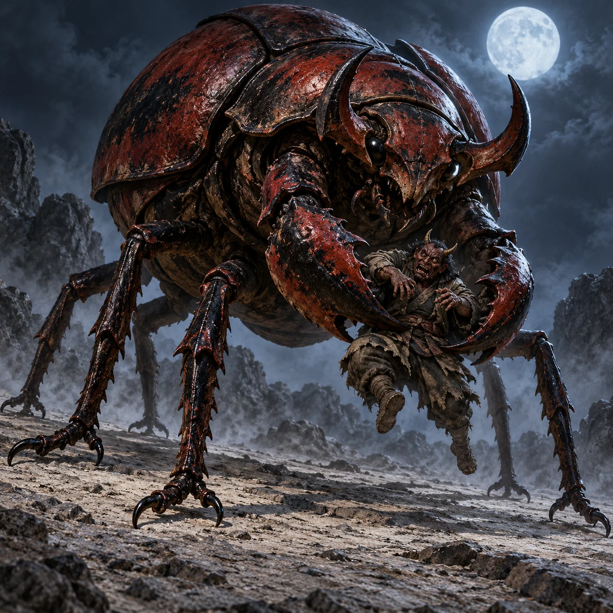
Shinchū, the giant beetlelike evil-repelling guardian
Aura: Threat or awe through documented anatomy ['shinchu-c03', 'shinchu-c06', 'shinchu-c08'] and action ['shinchu-c01', 'shinchu-c03', 'shinchu-c04']; no generic aura.
Audit ciri dan sumber
- [object Object]
- [object Object]
- [object Object]
Native PNG and 200px thumbnail inspected. Subject dominates, active threatening or awe-inspiring moment, claim-mapped anatomy/effects/setting, no text, watermark or generic aura; all seven Sangar checks pass.
Review sumberONE original square premium painterly cinematic Mitoloka illustration of Shinchū, the giant beetlelike evil-repelling guardian.
ANATOMY: One enormous beetlelike insect body, exactly one head, two eyes and EIGHT clearly separated articulated limbs total: TWO front grasping arms; THREE long walking legs on picture LEFT; THREE long walking legs on picture RIGHT. Each walking foot clearly visible against pale bare ground with wide negative gaps. All SIX walking feet fit within the picture. NO walking leg hidden by torso, rock or another limb; hard densely colored dark red and black beetle shell; no extra legs or feelers resembling limbs. One small oni figure in opaque ragged clothing held securely in the front pair of limbs. [shinchu-c03, shinchu-c06, shinchu-c08]
MOMENT: Lean down toward camera, four rear limbs braced on rock, middle pair thrust forward and front pair gripping a small plague oni to drive it away; guardian fills frame.
POWER: Physically subdue and repel a plague oni, no invented energy, fire or magic aura. [shinchu-c01, shinchu-c03, shinchu-c04]
SCALE & CAMERA: Low three-quarter angle far enough back to show all eight limbs completely, beetle fills 85% frame with six walking legs spread out and small oni gripped above ground by two front arms. Pale barren ground separates dark legs clearly.
LIGHT & WEATHER: one dominant cold moonlight source, sharp rim light, deep warm walnut shadows, natural dust or mist.
SURFACE: tactile coarse weathered surfaces, rich painterly texture, no plastic finish.
SETTING: Indistinct dark rocky ground without buildings or written scrolls. [shinchu-c03]
MOOD: menacing or awe-inspiring, dangerous and imposing, never cute, calm or decorative.
HARD CONSTRAINTS: no text, pseudoinscriptions, lettering, logo, border, frame or watermark; no extra heads, limbs or fingers; no design borrowed from film, game, anime or comic; opaque full clothing for humanoids; no nudity or explicit gore; no generic glow aura, neon outline, energy ribbons or magic symbols.
Sukunabikona
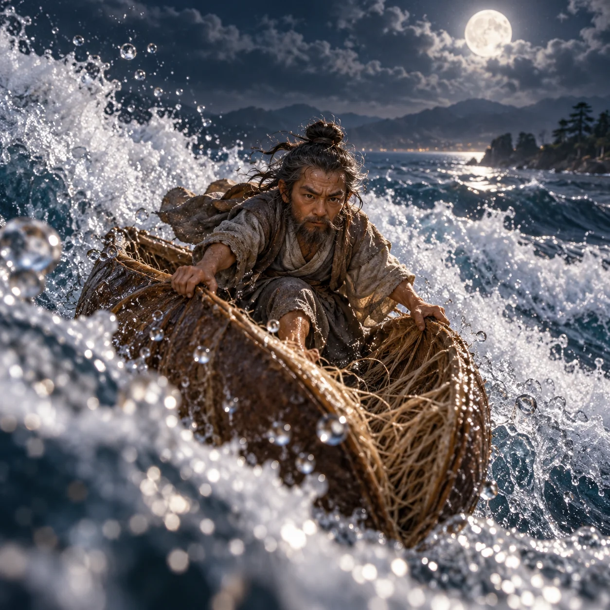
Thumb-sized kami bracing inside a Metaplexis seedpod amid Miho Bay whitecaps.
Aura: Thumb-size c10 and whitecap voyage c03/c04 create sacred resolve without invented magic.
Audit ciri dan sumber
- [object Object]
- [object Object]
Native and 200px inspected: tiny kami rides unmistakably fibrous seedpod among oversized spherical droplets and breaking whitecaps, braced action and resolute face. No giant scale, no ocean-control effect, no text or extra anatomy. Sacred resolve and peril provide awe at macro scale; all seven Sangar checks pass.
Review sumberONE original square premium painterly cinematic Mitoloka illustration of Sukunabikona, the thumb-sized Shinto kami arriving across the sea in a plant-pod boat.
ANATOMY: exactly one tiny dwarf man NO BIGGER THAN A HUMAN THUMB, one head, two eyes, two arms and two legs, fully covered in simple opaque weathered Japanese robes without symbols; one natural split Metaplexis seedpod serves as his boat, large real seed fibers make miniature size unmistakable [sukunabikona-c02,sukunabikona-c04,sukunabikona-c10] [sukunabikona-c02, sukunabikona-c04, sukunabikona-c10, sukunabikona-c03]
MOMENT: Ride a breaking whitecap directly toward camera, braced with one foot forward inside the seedpod and both hands gripping its rim, gaze fierce and resolute, soaked robes whipping back
POWER: No magical effects; documented arrival across whitecap waves in a plant pod [sukunabikona-c03,sukunabikona-c04]; he is NOT controlling the ocean
SCALE & CAMERA: extreme low angle; extreme macro at seedpod waterline; tiny kami head and torso occupy central half, seedpod fills foreground, giant droplets and seed fibers establish thumb-sized scale, no human or oversized divine body
LIGHT & WEATHER: one dominant moonlight source, strong rim light, deep dark warm shadows, natural spray or dust appropriate to setting
SURFACE: fibrous ribbed natural plant pod, soaked coarse robe, ocean salt spray
SETTING: whitecap sea at Miho Bay, Japanese coastline far behind [sukunabikona-c03]
MOOD: respectful, divinely resolute, awe-inspiring and overwhelming through macro confrontation with the wave, never cute or decorative
HARD CONSTRAINTS: no text, pseudoinscriptions, lettering, logo, border, frame or watermark; no extra heads, limbs or fingers; no borrowed film, game, anime or comic design; no nudity or explicit gore; no generic glow aura, neon outline or energy ribbons.
Taotie
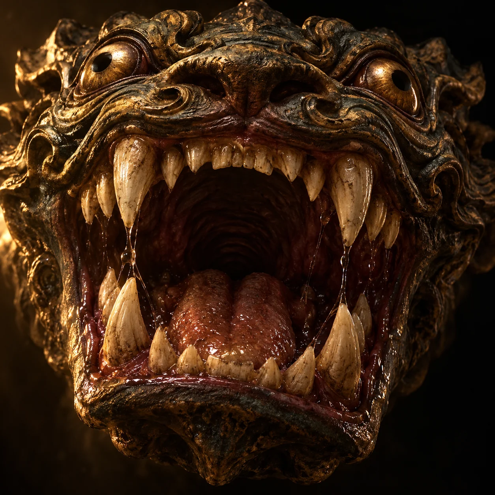
living bodiless taotie head based on Zhou bronze account
Aura: No added magical effects; head lunges forward with jaw opening in documented devouring hunger; no victim shown taotie-c04,taotie-c09
Audit ciri dan sumber
- [object Object]
- [object Object]
- [object Object]
Native and200 inspected: isolated living head without body c05/c09 lunges with open wet flesh mouth, tongue and saliva; bronze-like hide evokes motif but organic interior and eyes read alive. Raised paired eyes c02 clear, no added body, text, victim or aura. All seven Sangar yes.
Review sumberONE original square premium painterly cinematic Mitoloka illustration of Taotie, living bodiless taotie head based on Zhou bronze account.
ANATOMY: One living symmetrical disembodied animal head with two bulging raised eyes and one huge open mouth; absolutely no body neck shoulders legs wings or additional heads, no invented horns [c02, c05, c09]
MOMENT: Surge directly toward viewer out of deep shadow, both raised eyes clearly visible, maw opening to swallow the foreground; tight frame makes bodiless head unmistakable.
POWER: No added magical effects; head lunges forward with jaw opening in documented devouring hunger; no victim shown [c04, c09]
SCALE & CAMERA: extreme low angle; close foreshortened framing with subject filling most of the square, no invented giant size unless explicitly stated above.
LIGHT & WEATHER: one low bronze-amber side light, sharp rim light, deep shadows; dark walnut and antique gold palette with one strong accent.
SURFACE: rough organic hide, wrinkled brow, aged ivory teeth, wet mouth.
SETTING: Featureless deep darkness, no invented landscape or bronze vessel [c05]
MOOD: menacing gluttonous monster; dangerous or awe-inspiring and imposing, never cute, calm or decorative.
HARD CONSTRAINTS: no text, writing, lettering, inscriptions, pseudoinscriptions, symbols, logo, border, frame or watermark; no extra heads, limbs or fingers; no design borrowed from any film, game, anime or comic; no nudity or explicit gore; no generic glow aura, neon outline or energy ribbons. Entirely original living creature; no statue or toy.
Taowu
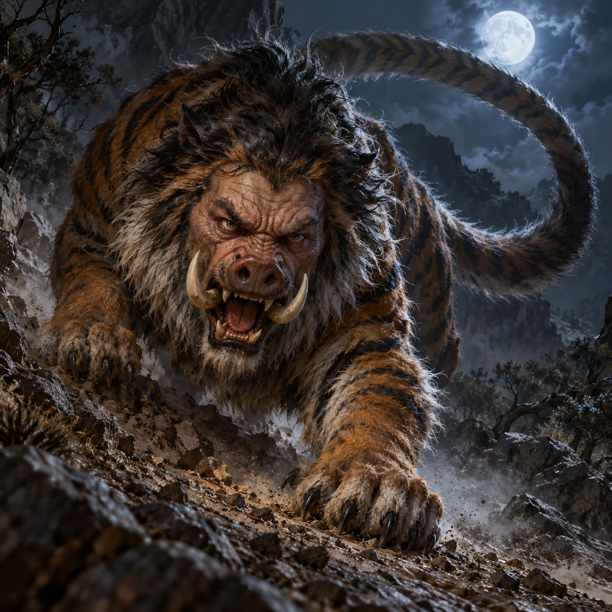
Taowu, the tiger-shaped beast with a human face
Aura: Threat or awe through documented anatomy ['taowu-c08', 'taowu-c10'] and action ['taowu-c08']; no generic aura.
Audit ciri dan sumber
- [object Object]
- [object Object]
- [object Object]
Native PNG and 200px thumbnail inspected. Subject dominates, active threatening or awe-inspiring moment, claim-mapped anatomy/effects/setting, no text, watermark or generic aura; all seven Sangar checks pass.
Review sumberONE original square premium painterly cinematic Mitoloka illustration of Taowu, the tiger-shaped beast with a human face.
ANATOMY: Exactly one tiger-shaped quadrupedal beast, one humanlike face with two eyes but a broad pig muzzle and two prominent boar tusks, shaggy doglike fur, exactly four tiger feet, one exceptionally long eighteen-foot tail curling once behind; no horns or wings. [taowu-c08, taowu-c10]
MOMENT: Bound down a rocky slope toward viewer, tusked jaws opened, front tiger paws cutting into ground.
POWER: Disorder through physical predatory movement only; no magical effect or aura. [taowu-c08]
SCALE & CAMERA: Tight low-angle close-up; subject fills frame, no invented giant scale.
LIGHT & WEATHER: one dominant cold moonlight source, sharp rim light, deep warm walnut shadows, natural dust or mist.
SURFACE: tactile coarse weathered surfaces, rich painterly texture, no plastic finish.
SETTING: Dark western wilds, rocky scrub wilderness. [taowu-c08]
MOOD: menacing or awe-inspiring, dangerous and imposing, never cute, calm or decorative.
HARD CONSTRAINTS: no text, pseudoinscriptions, lettering, logo, border, frame or watermark; no extra heads, limbs or fingers; no design borrowed from film, game, anime or comic; opaque full clothing for humanoids; no nudity or explicit gore; no generic glow aura, neon outline, energy ribbons or magic symbols.
Tarkshya
Menunggu gambar yang lolos audit
Tenaga-Ashinaga
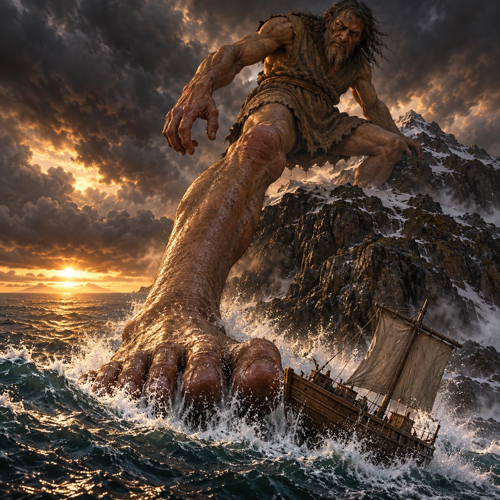
single long-legged mountain giant from Yuza version
Aura: Use an enormous foot to rake an offshore ship toward mountain; the foot physically throws seawater and the ship tilts; no eaten people or gore tenaga-ashinaga-c08
Audit ciri dan sumber
- [object Object]
- [object Object]
- [object Object]
Native and200 inspected. Single huge giant seated mountain rakes ship with extremely long leg c08. Two legs two arms one head, giant foot five toes clear; fully opaque tunic. Physical ship/water contact and documented mountain scale, no aura or text. All seven Sangar yes.
Review sumberONE original square premium painterly cinematic Mitoloka illustration of Tenaga-Ashinaga, single long-legged mountain giant from Yuza version.
ANATOMY: Exactly one huge humanoid giant with one head, two arms, two extraordinarily long legs; fully opaque plain rough tunic, knees and impossibly extended lower legs clearly visible [c01, c02, c05, c08]
MOMENT: Hunch from the mountain summit toward viewer while one huge extended leg reaches down into the sea, foot hooking beside a tiny wooden boat; giant face and bent other knee remain large and legible.
POWER: Use an enormous foot to rake an offshore ship toward mountain; the foot physically throws seawater and the ship tilts; no eaten people or gore [c08]
SCALE & CAMERA: extreme low angle; close foreshortened framing with subject filling most of the square, no invented giant size unless explicitly stated above.
LIGHT & WEATHER: one low sun slit below storm cloud, sharp rim light, deep shadows; dark walnut and antique gold palette with one strong accent.
SURFACE: rough weathered skin, coarse opaque tunic, slick rock, frothing sea.
SETTING: Mount Chokai summit above offshore water with tiny wooden ship as scale reference [c08]
MOOD: menacing ship-raiding giant; dangerous or awe-inspiring and imposing, never cute, calm or decorative.
HARD CONSTRAINTS: no text, writing, lettering, inscriptions, pseudoinscriptions, symbols, logo, border, frame or watermark; no extra heads, limbs or fingers; no design borrowed from any film, game, anime or comic; no nudity or explicit gore; no generic glow aura, neon outline or energy ribbons. Entirely original living creature; no statue or toy.
Tentōki and Ryūtōki
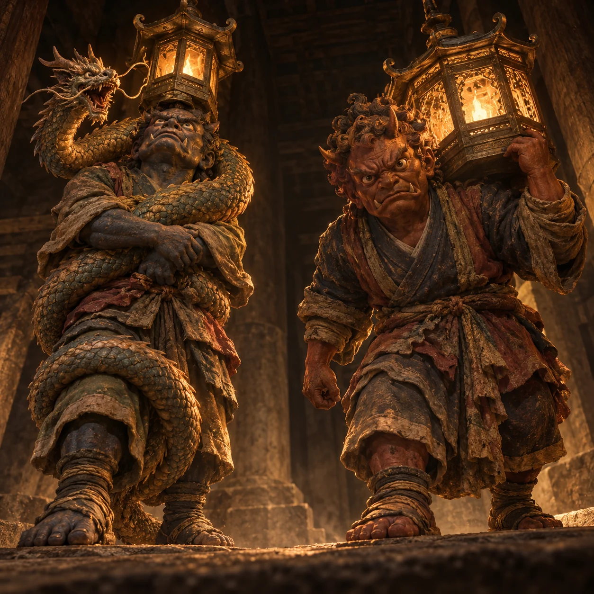
Tentōki and Ryūtōki, the two small oni-shaped Buddhist offering guardians
Aura: Threat or awe through documented anatomy ['tentoki-and-ryutoki-c01', 'tentoki-and-ryutoki-c02', 'tentoki-and-ryutoki-c04', 'tentoki-and-ryutoki-c06', 'tentoki-and-ryutoki-c07'] and action ['tentoki-and-ryutoki-c03']; no generic aura.
Audit ciri dan sumber
- [object Object]
- [object Object]
- [object Object]
Native PNG and 200px thumbnail inspected. Subject dominates, active threatening or awe-inspiring moment, claim-mapped anatomy/effects/setting, no text, watermark or generic aura; all seven Sangar checks pass.
Review sumberONE original square premium painterly cinematic Mitoloka illustration of Tentōki and Ryūtōki, the two small oni-shaped Buddhist offering guardians.
ANATOMY: Exactly TWO small oni-shaped living figures, each one head, two eyes, two arms and two legs, compact fierce faces, fully covered in plain opaque short robes. Tentōki stands on the RIGHT side of the picture, facing forward. His lantern sits on his OWN LEFT SHOULDER, therefore the lantern is on the VIEWER RIGHT edge of the composition. His OWN LEFT HAND on VIEWER RIGHT supports it. His own right shoulder and right arm (viewer left) are empty. Ryūtōki on the LEFT of the picture carries one lantern on head, a single long serpentine dragon coils around his body, hands crossed before body. [tentoki-and-ryutoki-c01, tentoki-and-ryutoki-c02, tentoki-and-ryutoki-c04, tentoki-and-ryutoki-c06, tentoki-and-ryutoki-c07]
MOMENT: Tentōki leans forward under his lantern while Ryūtōki braces feet and looks upward, the coiled dragon lifts its head toward viewer; lantern-bearing pair confront from low angle.
POWER: No magical effect; physical lantern flame illuminates protective oni pair, not destructive demons. [tentoki-and-ryutoki-c03]
SCALE & CAMERA: Extreme low angle close view; both faces and distinct lantern positions remain clearly visible. Small oni proportions.
LIGHT & WEATHER: one dominant warm light from the two offering lantern flames, sharp rim light, deep warm walnut shadows, natural dust or mist.
SURFACE: tactile coarse weathered surfaces, rich painterly texture, no plastic finish.
SETTING: Deep dark interior associated with Kōfuku-ji in Nara, only plain shadowed timber and stone. [tentoki-and-ryutoki-c04, tentoki-and-ryutoki-c06]
MOOD: menacing or awe-inspiring, dangerous and imposing, never cute, calm or decorative.
HARD CONSTRAINTS: no text, pseudoinscriptions, lettering, logo, border, frame or watermark; no extra heads, limbs or fingers; no design borrowed from film, game, anime or comic; opaque full clothing for humanoids; no nudity or explicit gore; no generic glow aura, neon outline, energy ribbons or magic symbols.
Thayé
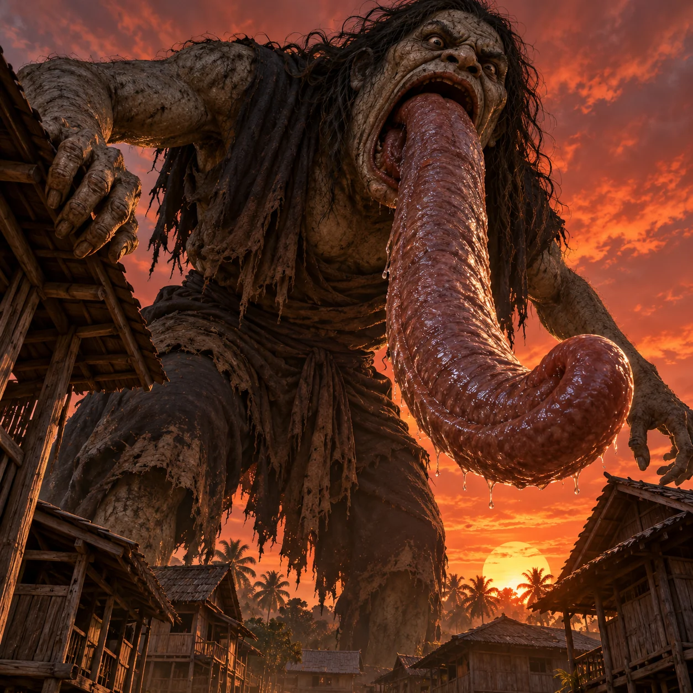
Giant hideous spirit with a trunk-like slimy tongue, no animal possession variant.
Aura: Giant body and huge trunk-like tongue c06/c13 dominate village c08; disease itself is not depicted as invented visual magic.
Audit ciri dan sumber
- [object Object]
- [object Object]
- [object Object]
Native and 200px inspected: giant hideous humanoid with single huge slimy curling tongue dominates village, clear reaching hunting action and giant comparison. No plague aura/gore/text, correct one head/two arms/two legs. All seven Sangar checks pass.
Review sumberONE original square premium painterly cinematic Mitoloka illustration of Thayé, the hideous giant spirit of Burmese folklore with a huge slimy trunk-like tongue.
ANATOMY: exactly one hideous giant humanoid spirit with one head, two eyes, two arms, two legs, one enormous long thick slimy tongue hanging and curling like an elephant trunk; fully opaque tattered dark wrap clothes covering torso and legs, no exposed gore, no horns or invented extra eyes [thaye-c06,thaye-c13] [thaye-c06, thaye-c13, thaye-c08, thaye-c16, thaye-c02]
MOMENT: Loom over the viewer between village houses, bend forward with huge mouth open while the long trunk-like tongue sweeps down toward the camera and one hand grips a roof beam
POWER: No colored plague mist or invented effects; threatening physical presence of the disease-bringing giant c16 and preying behavior c08 only, no sick victims or gore
SCALE & CAMERA: extreme low angle; giant head and long tongue dominate upper two-thirds, tiny timber village roofs beneath its shoulders establish documented giant size
LIGHT & WEATHER: one dominant dying-red sunset behind roofs, warm rim light, deep black shadows and ordinary dust
SURFACE: cracked ashen skin, wet rope-thick tongue, slimy stretched fingers, coarse rotten cloth, weathered timber
SETTING: Burmese village at sunset where spirits seek prey [thaye-c02,thaye-c08]
MOOD: menacing, dangerous and imposing, never cute, calm or decorative
HARD CONSTRAINTS: no text, pseudoinscriptions, lettering, logo, border, frame or watermark; no extra heads, limbs or fingers; no borrowed film, game, anime or comic design; no nudity or explicit gore; no generic glow aura, neon outline or energy ribbons.
Three-legged turtle
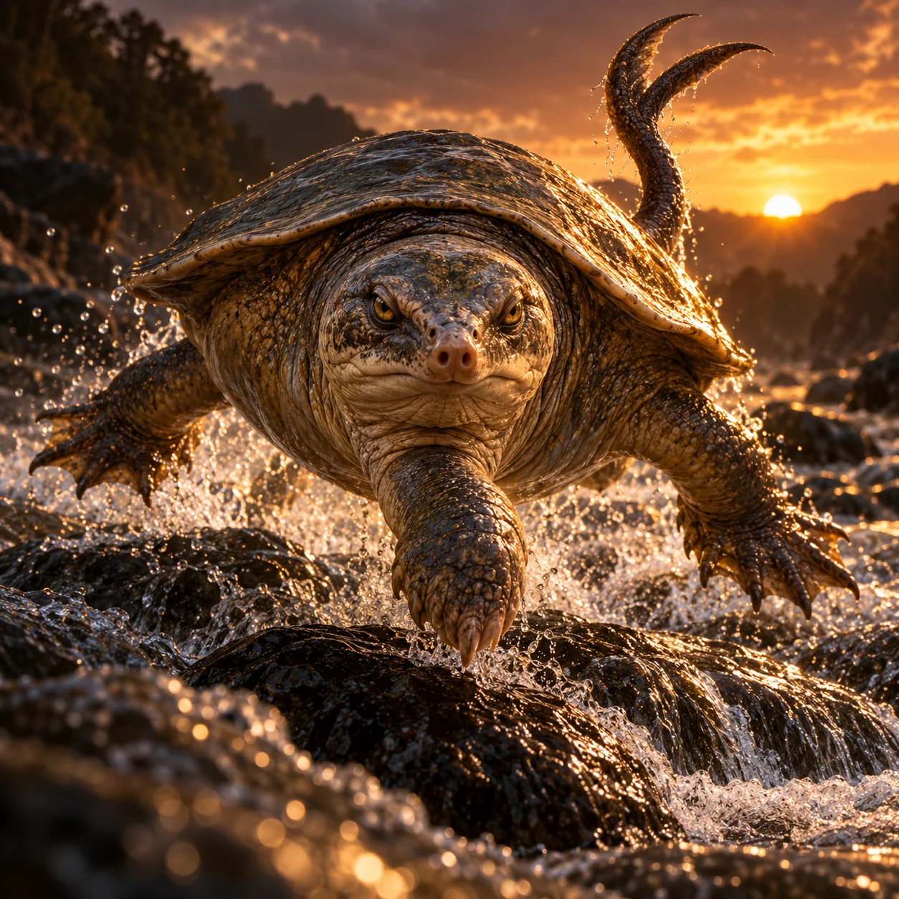
three-legged softshell turtle with branching tail
Aura: No added magic; turtle thrusts forward and splashes river water three-legged-turtle-c04
Audit ciri dan sumber
- [object Object]
- [object Object]
- [object Object]
Native and200 inspected: exactly three legs visibly separated, one center forward and two lateral rear. Forked tail c04 clear; lunging softshell turtle fills frame, no extra foot, magic or text. All seven Sangar yes.
Review sumberONE original square premium painterly cinematic Mitoloka illustration of Three-legged turtle, three-legged softshell turtle with branching tail.
ANATOMY: One softshell turtle with exactly THREE legs TOTAL: one central front leg beneath throat, two rear legs spread on either side, all three clearly separated and fully visible; one head two eyes soft leathery shell and one forked branching tail visible behind; no fourth leg [c01, c04, c06]
MOMENT: Vault off a submerged river stone toward viewer, three legs spread clearly against dark water, forked tail lifted behind, head jabbing forward with fierce stare.
POWER: No added magic; turtle thrusts forward and splashes river water [c04]
SCALE & CAMERA: extreme low angle; close foreshortened framing with subject filling most of the square, no invented giant size unless explicitly stated above.
LIGHT & WEATHER: one low amber sunset behind riverbank, sharp rim light, deep shadows; dark walnut and antique gold palette with one strong accent.
SURFACE: wrinkled leathery soft shell, wet granular skin.
SETTING: River Trailer, shallow rushing water over dark stones [c04]
MOOD: uncanny and imposing mythical turtle; dangerous or awe-inspiring and imposing, never cute, calm or decorative.
HARD CONSTRAINTS: no text, writing, lettering, inscriptions, pseudoinscriptions, symbols, logo, border, frame or watermark; no extra heads, limbs or fingers; no design borrowed from any film, game, anime or comic; no nudity or explicit gore; no generic glow aura, neon outline or energy ribbons. Entirely original living creature; no statue or toy.
Three Pioneer Kami
Menunggu gambar yang lolos audit
Tōdaiki
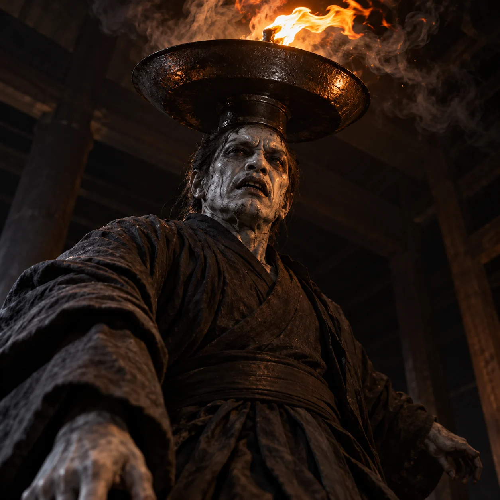
Human-based oni candlestand, Tang clothes, lamp fixed atop painted head; no invented horns.
Aura: Head-fixed burning lamp and transformed oni identity c07/c08 produce uncanny dread without invented magic.
Audit ciri dan sumber
- [object Object]
- [object Object]
- [object Object]
Attempt02 native and 200px inspected: painted human-based oni with clear head-fixed real burning lamp; plain lamp rim and plain robe have no pseudoinscriptions. Forward-reaching step and underlit grim face create menace, no invented horns, no gore, no aura. All seven Sangar checks pass.
Review sumberONE original square premium painterly cinematic Mitoloka illustration of Tōdaiki, the envoy transformed into a living oni candlestand in a classical Japanese tale.
ANATOMY: one underlying human male figure, one head, two eyes, two arms and legs, painted ashen skin, fully opaque Chinese Tang-style dark robes; one broad iron candlestand fixed directly to the top of his head carrying a real burning oil lamp, NO horns or extra monster anatomy [todaiki-c02,todaiki-c07,todaiki-c08] [todaiki-c02, todaiki-c07, todaiki-c08, todaiki-c03, todaiki-c04]
MOMENT: Step out of deep black interior toward viewer under the immense head-fixed lamp, arms tense and sleeves billowing, face anguished but ominously resolute, lamp flame violently bent by his motion
POWER: Physical burning lamp is a documented attribute [todaiki-c02,todaiki-c08], soot smoke and sparks come only from real wick flame; no aura
SCALE & CAMERA: extreme low angle; close low-angle looking up at gaunt painted face and large head-fixed lamp, face and lamp consume square, no unsupported giant scale
LIGHT & WEATHER: one dominant real head-mounted lamp flame, dramatic underlighting and iron rim reflections, curling black smoke
SURFACE: cracked painted skin, pitted iron candlestand, thick soot, oily lamp flame, coarse dark silk cloth
SETTING: dark uninscribed Tang Chinese interior where transformed envoy is encountered [todaiki-c03,todaiki-c04,todaiki-c07]
MOOD: menacing, dangerous and imposing, never cute, calm or decorative
HARD CONSTRAINTS: no text, pseudoinscriptions, lettering, logo, border, frame or watermark; no extra heads, limbs or fingers; no borrowed film, game, anime or comic design; no nudity or explicit gore; no generic glow aura, neon outline or energy ribbons.
ADDITIONAL STRICT SURFACE RULE: Every lamp, iron support, vessel, belt and robe surface must be utterly plain and uninscribed: NO inscriptions, symbols, glyphs, numerals, sigils, seals, monograms, decorative engraving, ornamental bands or calligraphy-like scratches. Solid black plain iron only. Plain unpatterned cloth only. Lamp is an unmarked shallow iron dish and a wick, without a lid or written rim.
Tokoloshe
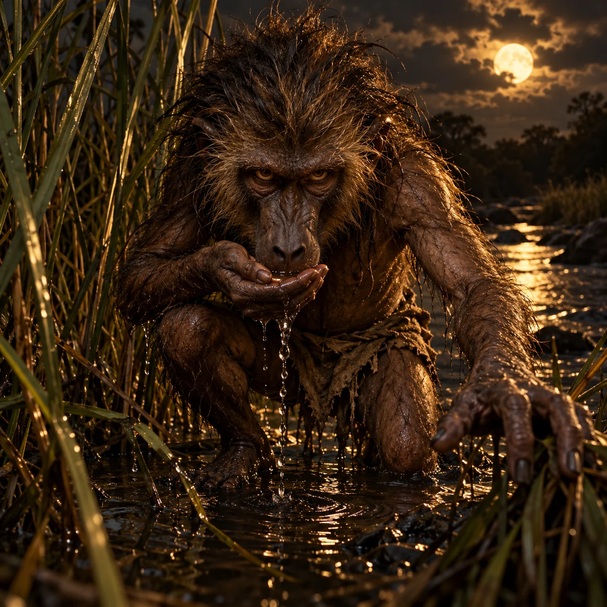
small hairy baboon-faced tokoloshe drinking before invisibility
Aura: Drink river water from one cupped hand; rear edge of hairy body partially disappears into transparent absence, foreground face and reaching hand remain solid, invisibility shown by reeds visible through missing outline, no glowing particles tokoloshe-c02
Audit ciri dan sumber
- [object Object]
- [object Object]
- [object Object]
Native and200 inspected: small hairy baboon-faced humanoid drinks river water c02 while reaching toward viewer among reeds c10. Entire body intentionally solid immediately before invisibility, no effects. Two arms two legs, opaque loincloth; no text or gore. All seven Sangar yes.
Review sumberONE original square premium painterly cinematic Mitoloka illustration of Tokoloshe, small hairy baboon-faced tokoloshe becoming invisible after drinking.
ANATOMY: One small hairy humanoid water sprite with baboon-like face, one head two eyes, two arms two legs; fully opaque rough loincloth covering pelvis, no horns or wings [c01, c08, c11]
MOMENT: Crouch among wet reeds close to viewer, drink from cupped hand while other hand reaches forward, narrow baboon eyes staring under brow; entire small body still fully visible in the moment just before it vanishes.
POWER: Drink water from one cupped hand immediately BEFORE becoming invisible, a documented triggering action; no actual invisibility yet, entire body fully solid and visible, no magical light. [c02]
SCALE & CAMERA: extreme low angle; close foreshortened framing with subject filling most of the square, no invented giant size unless explicitly stated above.
LIGHT & WEATHER: one low warm moon through cloud, sharp rim light, deep shadows; dark walnut and antique gold palette with one strong accent.
SURFACE: matted brown hair, leathery baboon muzzle, soaked cloth, muddy reeds.
SETTING: Deep river pool among reeds and rushes on flowing riverbank [c10]
MOOD: menacing mischievous water spirit; dangerous or awe-inspiring and imposing, never cute, calm or decorative.
HARD CONSTRAINTS: no text, writing, lettering, inscriptions, pseudoinscriptions, symbols, logo, border, frame or watermark; no extra heads, limbs or fingers; no design borrowed from any film, game, anime or comic; no nudity or explicit gore; no generic glow aura, neon outline or energy ribbons. Entirely original living creature; no statue or toy.
Trucafort
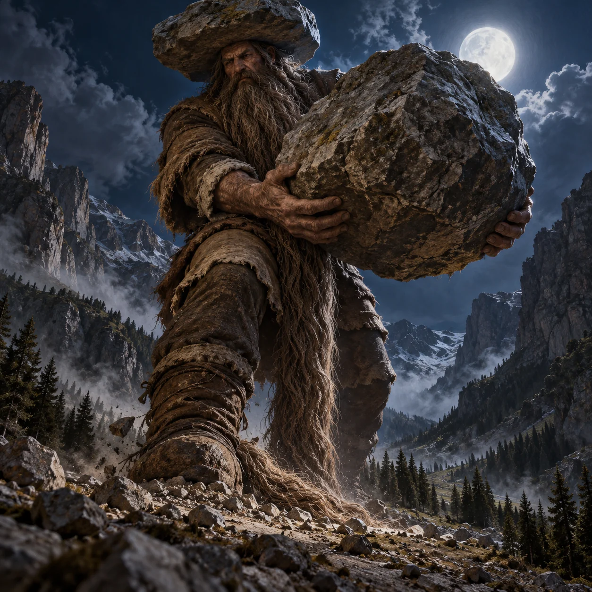
Trucafort, the mountain-tall Catalan giant
Aura: Threat or awe through documented anatomy ['trucafort-c01', 'trucafort-c02', 'trucafort-c06'] and action ['trucafort-c02']; no generic aura.
Audit ciri dan sumber
- [object Object]
- [object Object]
- [object Object]
Native PNG and 200px thumbnail inspected. Subject dominates, active threatening or awe-inspiring moment, claim-mapped anatomy/effects/setting, no text, watermark or generic aura; all seven Sangar checks pass.
Review sumberONE original square premium painterly cinematic Mitoloka illustration of Trucafort, the mountain-tall Catalan giant.
ANATOMY: Exactly one mountain-sized bearded man, one head, two eyes, two arms and two legs; enormously long beard descends to the ground and is trodden beneath one foot; rough opaque tunic and trousers; one huge rock balanced on head as hat and another TEN TIMES heavier boulder held in both hands. [trucafort-c01, trucafort-c02, trucafort-c06]
MOMENT: Stride toward the valley and viewer, stoop under rock hat and lift the second immense boulder ready to drop onto empty ground.
POWER: Physical footsteps and weight disturb stones; no magical aura, no victim or gore. [trucafort-c02]
SCALE & CAMERA: Extreme low angle in valley; mountain-tall giant fills frame, tiny pines provide clear scale.
LIGHT & WEATHER: one dominant cold moonlight source, sharp rim light, deep warm walnut shadows, natural dust or mist.
SURFACE: tactile coarse weathered surfaces, rich painterly texture, no plastic finish.
SETTING: Dark Catalan mountain valley near Castellar de n'Hug. [trucafort-c01, trucafort-c03]
MOOD: menacing or awe-inspiring, dangerous and imposing, never cute, calm or decorative.
HARD CONSTRAINTS: no text, pseudoinscriptions, lettering, logo, border, frame or watermark; no extra heads, limbs or fingers; no design borrowed from film, game, anime or comic; opaque full clothing for humanoids; no nudity or explicit gore; no generic glow aura, neon outline, energy ribbons or magic symbols.
Turtle Lake Monster
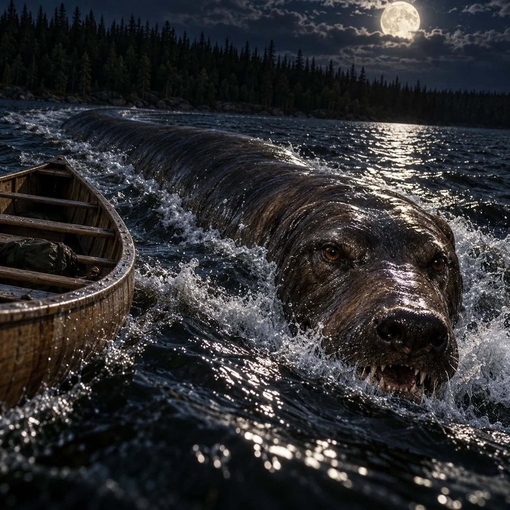
Smooth-skinned dog-headed report variant, no dorsal fin, body mostly submerged.
Aura: The long dog-headed monster c02/c06 surges from the dangerous eastern-shore territory c10 without invented magic.
Audit ciri dan sumber
- [object Object]
- [object Object]
Attempt02 native and 200px inspected: nine-metre smooth elongated aquatic dogheaded monster beside a normal wooden canoe clearly establishes abnormal scale; no dorsal fin or exposed invented limbs. Surging motion and toothed muzzle are threatening, no attack-on-boat or magic is claimed. No text/gore. Seven Sangar checks pass.
Review sumberONE original square premium painterly cinematic Mitoloka illustration of Turtle Lake Monster, the lake cryptid of Saskatchewan with a dog-like head and no dorsal fin.
ANATOMY: one broad dog-like head, two eyes, long smooth-skinned aquatic body NINE METRES LONG, as long as two adult canoes nose-to-tail, back completely smooth with NO DORSAL FIN, no invented horns, spines, wings, scales, legs or flippers; most of body remains submerged [turtle-lake-monster-c02,turtle-lake-monster-c06] [turtle-lake-monster-c02, turtle-lake-monster-c06, turtle-lake-monster-c01, turtle-lake-monster-c10]
MOMENT: Surge toward viewer at the lake surface, broad dog-like muzzle thrust through breaking water, wet teeth just visible as lips part; body is a long smooth aquatic monster, NOT a seal, NOT an otter, NOT an ordinary swimming dog, no fur on its body, long smooth back cutting a heavy wake behind
POWER: No documented supernatural power. Physical swimming emergence and threatening close presence only
SCALE & CAMERA: extreme low angle; very low at lake waterline, oblique three-quarter view; a normal four-metre wooden canoe floats DIRECTLY BESIDE the creature in the foreground, the nine-metre elongated smooth aquatic body is more than twice the canoe length, with doglike head and long body fully legible at once. Boat is a scale comparison only, no attack on it. Creature body and head fill most of square, no giant unsupported scale
LIGHT & WEATHER: one dominant moonlight source, strong rim light, deep dark warm shadows, natural spray or dust appropriate to setting
SURFACE: smooth wet charcoal-brown skin, doglike muzzle texture, silver water spray
SETTING: the deep eastern shore of Turtle Lake in Saskatchewan, dark boreal bank behind [turtle-lake-monster-c01,turtle-lake-monster-c10]
MOOD: menacing, dangerous and imposing, never cute, calm or decorative
HARD CONSTRAINTS: no text, pseudoinscriptions, lettering, logo, border, frame or watermark; no extra heads, limbs or fingers; no borrowed film, game, anime or comic design; no nudity or explicit gore; no generic glow aura, neon outline or energy ribbons.
Ulmecatl
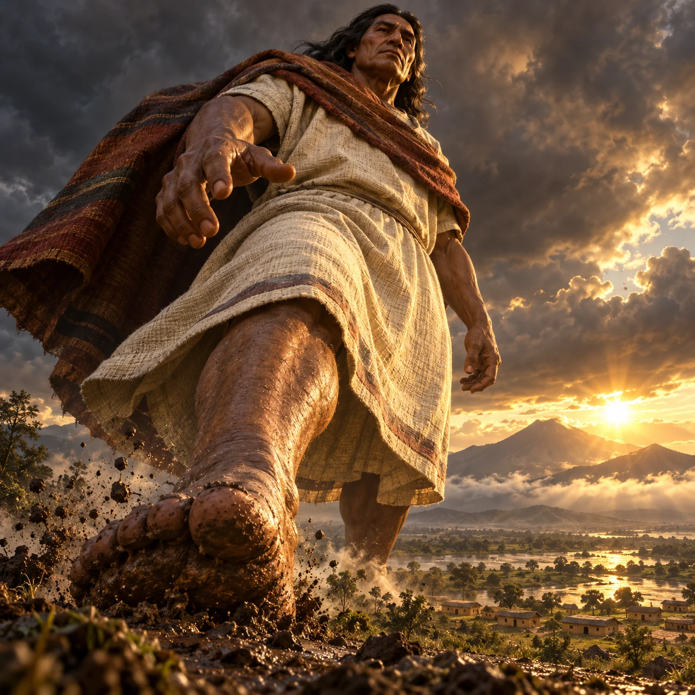
Ulmecatl the giant ancestral founder
Aura: No documented magic; towering founding giant strides over ground with dust from his footstep, establishing settlement after flood ulmecatl-c01,ulmecatl-c02
Audit ciri dan sumber
- [object Object]
- [object Object]
- [object Object]
Native and200 inspected: immense fully clothed man strides over tiny settlement and trees, foot throws ground dust. Giant scale unmistakable c01/c04 rather than ordinary human. Two arms two legs one head, no undocumented powers, weapons or text. All seven Sangar yes.
Review sumberONE original square premium painterly cinematic Mitoloka illustration of Ulmecatl, Ulmecatl the giant ancestral founder.
ANATOMY: One giant man with one head, two arms and two legs, fully opaque plain woven long tunic and mantle, no invented crown weapons or deity attributes [c01, c03, c04]
MOMENT: Stride down toward viewer with forward hand extended over tiny land below, tunic hem pulled by wind, enormous foot landing in foreground. Head and shoulders dominate above distant trees.
POWER: No documented magic; towering founding giant strides over ground with dust from his footstep, establishing settlement after flood [c01, c02]
SCALE & CAMERA: extreme low angle; close foreshortened framing with subject filling most of the square, no invented giant size unless explicitly stated above.
LIGHT & WEATHER: one low amber sun breaking over storm horizon, sharp rim light, deep shadows; dark walnut and antique gold palette with one strong accent.
SURFACE: weathered skin, thick woven opaque mantle, damp soil.
SETTING: Land of Cuetlachoapan, future Puebla, after Great Flood; tiny distant trees and plain low dwellings for giant scale [c01, c02, c06]
MOOD: awe-inspiring ancestral giant, dignified; dangerous or awe-inspiring and imposing, never cute, calm or decorative.
HARD CONSTRAINTS: no text, writing, lettering, inscriptions, pseudoinscriptions, symbols, logo, border, frame or watermark; no extra heads, limbs or fingers; no design borrowed from any film, game, anime or comic; no nudity or explicit gore; no generic glow aura, neon outline or energy ribbons. Entirely original living creature; no statue or toy.
Umi zatō
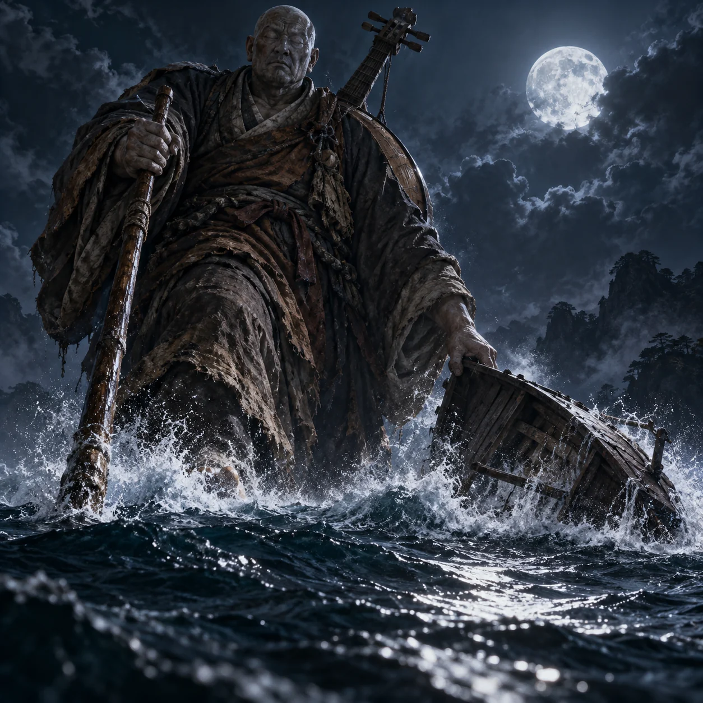
Umi zatō, the gigantic blind monk musician of the Japanese sea
Aura: Threat or awe through documented anatomy ['umi-zato-c02', 'umi-zato-c03', 'umi-zato-c08', 'umi-zato-c13'] and action ['umi-zato-c10', 'umi-zato-c15']; no generic aura.
Audit ciri dan sumber
- [object Object]
- [object Object]
- [object Object]
Native PNG and 200px thumbnail inspected. Subject dominates, active threatening or awe-inspiring moment, claim-mapped anatomy/effects/setting, no text, watermark or generic aura; all seven Sangar checks pass.
Review sumberONE original square premium painterly cinematic Mitoloka illustration of Umi zatō, the gigantic blind monk musician of the Japanese sea.
ANATOMY: Exactly one gigantic blind monk-like humanoid, one bald head, two closed blind eyes, two arms and two legs, fully covered in rough opaque layered monk robes; one long cane in right hand; one large biwa instrument visibly strapped to back with neck over shoulder. [umi-zato-c02, umi-zato-c03, umi-zato-c08, umi-zato-c13]
MOMENT: Stride over the ocean toward viewer, lower the long cane into a wave while left hand turns a small empty wooden fishing boat on its side.
POWER: Walk on water and capsize a boat physically; no aura, no glowing eyes. [umi-zato-c10, umi-zato-c15]
SCALE & CAMERA: Extreme low angle at sea surface; giant head and shoulders occupy upper frame, tiny overturned boat below confirms scale.
LIGHT & WEATHER: one dominant cold moonlight source, sharp rim light, deep warm walnut shadows, natural dust or mist.
SURFACE: tactile coarse weathered surfaces, rich painterly texture, no plastic finish.
SETTING: Waters surrounding Japan at night. [umi-zato-c07, umi-zato-c08]
MOOD: menacing or awe-inspiring, dangerous and imposing, never cute, calm or decorative.
HARD CONSTRAINTS: no text, pseudoinscriptions, lettering, logo, border, frame or watermark; no extra heads, limbs or fingers; no design borrowed from film, game, anime or comic; opaque full clothing for humanoids; no nudity or explicit gore; no generic glow aura, neon outline, energy ribbons or magic symbols.
Underwater panther
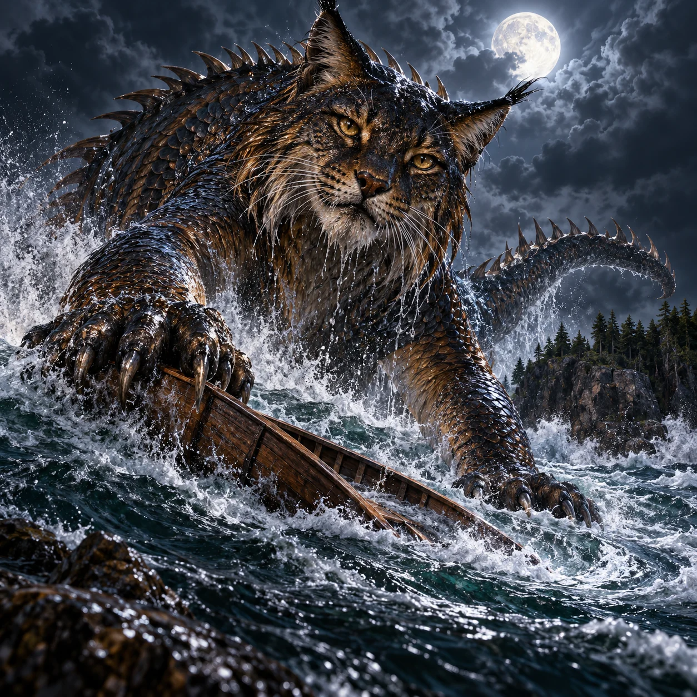
Great Lynx with scaled cat body and dagger-spiked back/tail, commanding currents.
Aura: Documented giant cat/scales/spines c02 and current-shifting canoe-sinking c06 act physically in Lake Superior.
Audit ciri dan sumber
- [object Object]
- [object Object]
- [object Object]
Native and 200px inspected: one great lynx with scaled body, feline paws and dagger back/tail spines dominates canoe-sinking squall. Head/limbs correct with rear limbs submerged, physically turbulent currents, no invented aura/horns/text. All seven Sangar checks pass.
Review sumberONE original square premium painterly cinematic Mitoloka illustration of Underwater panther, Mishipeshu, the Great Lynx water being of the Great Lakes.
ANATOMY: one giant cat head with two feline eyes and lynxlike ears, massive cat paws, thick fish-scaled body, long tapering tail, dagger-like spikes along entire back and tail; exactly one head and four paws, no wings or horns not documented here [underwater-panther-c02] [underwater-panther-c02, underwater-panther-c06, underwater-panther-c03]
MOMENT: Rear out of the lake directly over viewer, one immense scaled cat paw dragging a canoe edge under the current while its head looks down in overwhelming command, spiked tail lashes behind
POWER: Lake water rises into violent rapids and spiraling currents around the panther, one empty canoe sinking, squall spray driven physically across water [underwater-panther-c06]; no magic beams or generic aura
SCALE & CAMERA: extreme low angle; extreme waterline low angle, giant lynx head and paws fill frame, tiny empty canoe makes documented great cat size clear
LIGHT & WEATHER: one dominant moonlight source, strong rim light, deep dark warm shadows, natural spray or dust appropriate to setting
SURFACE: wet bronze-black fish scales, dagger-shaped rough back spines, drenched cat muzzle, rough copper-tinted rock
SETTING: Lake Superior beside Michipicoten Island under a dark squall [underwater-panther-c03,underwater-panther-c06]
MOOD: respectfully overwhelming and dangerous sacred water being, awe-inspiring rather than cartoon demon
HARD CONSTRAINTS: no text, pseudoinscriptions, lettering, logo, border, frame or watermark; no extra heads, limbs or fingers; no borrowed film, game, anime or comic design; no nudity or explicit gore; no generic glow aura, neon outline or energy ribbons.
Ura
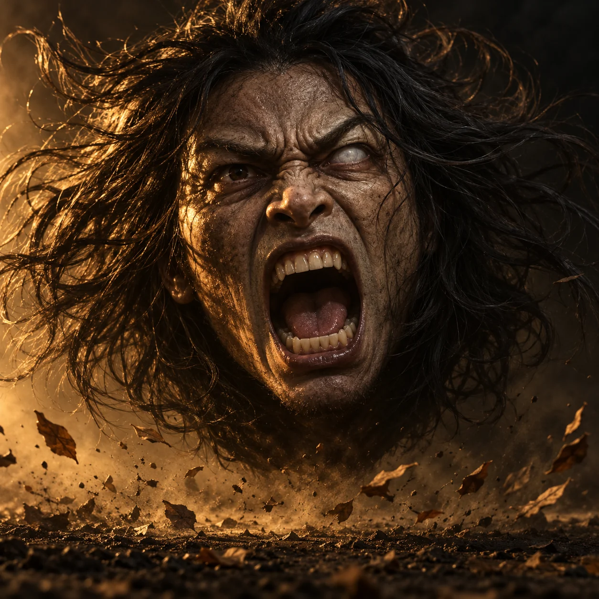
living roaring head of Ura after defeat
Aura: The head remains alive and roars after capture; air-driven dust and loose dry leaves scatter beneath it, no flames beams or aura ura-c06
Audit ciri dan sumber
- [object Object]
- [object Object]
- [object Object]
Native and200 inspected. Intact bodiless humanlike head roars c06, injured left eye c03 clouded, no blood or cut surface. Horns and fangs removed after rejection. Wind-scattered leaves/dust from roaring movement, no aura or inscriptions. All seven Sangar yes.
Review sumberONE original square premium painterly cinematic Mitoloka illustration of Ura, living roaring head of Ura after defeat.
ANATOMY: One intact roaring hornless humanlike supernatural head, two eyes, one mouth, left eye clouded from arrow injury without any wound blood or arrows; no body neck shoulders or gore [c01, c03, c06]
MOMENT: Roar directly toward viewer, mouth wide open, brow tense, hair whipping; intact living head suspended above shadowed ground, lower edge hidden by deep shadow, no cut surface visible.
POWER: The head remains alive and roars after capture; air-driven dust and loose dry leaves scatter beneath it, no flames beams or aura [c06]
SCALE & CAMERA: extreme low angle; close foreshortened framing with subject filling most of the square, no invented giant size unless explicitly stated above.
LIGHT & WEATHER: one low amber side light, sharp rim light, deep shadows; dark walnut and antique gold palette with one strong accent.
SURFACE: weathered skin, tangled dark hair, wet teeth, dry leaves.
SETTING: Dark Kibi ground near where head was displayed, entirely plain backdrop with no architecture [c02, c05, c06]
MOOD: menacing roaring oni spirit; dangerous or awe-inspiring and imposing, never cute, calm or decorative.
HARD CONSTRAINTS: absolutely hornless, ordinary human teeth without fangs or tusks, smooth unadorned forehead beneath hair; no text, writing, lettering, inscriptions, pseudoinscriptions, symbols, logo, border, frame or watermark; no extra heads, limbs or fingers; no design borrowed from any film, game, anime or comic; no nudity or explicit gore; no generic glow aura, neon outline or energy ribbons. Entirely original living creature; no statue or toy.
Vadavagni
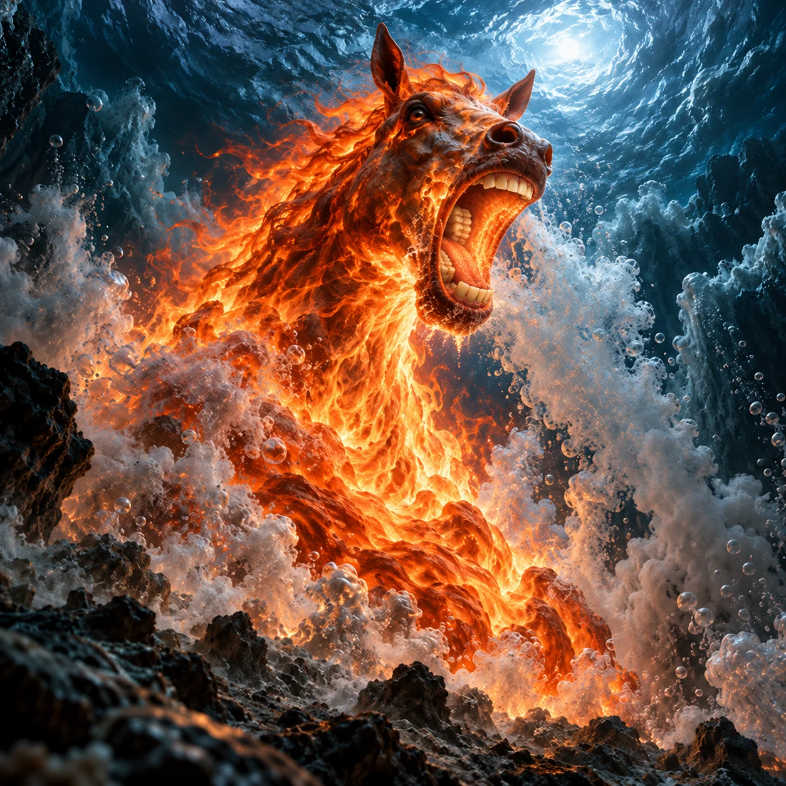
Vadavagni, the sacred submarine fire with a mare's head
Aura: Threat or awe through documented anatomy ['vadavagni-c01', 'vadavagni-c02', 'vadavagni-c09'] and action ['vadavagni-c03', 'vadavagni-c09', 'vadavagni-c13']; no generic aura.
Audit ciri dan sumber
- [object Object]
- [object Object]
- [object Object]
Native PNG and 200px thumbnail inspected. Subject dominates, active threatening or awe-inspiring moment, claim-mapped anatomy/effects/setting, no text, watermark or generic aura; all seven Sangar checks pass.
Review sumberEDIT ONLY the mouth dentition of this Vadavagni illustration. Preserve the exact composition, single mare head, two ears, two eyes, blazing flame body, underwater seabed, boiling ocean water and steam, textures and cinematic lighting. Replace every long pointed fang/tusk/canine with natural HERBIVOROUS MARE TEETH: a small flat row of short broad incisors at the front, toothless gap behind incisors and blunt grinding molars farther back. No pointed canine teeth, fangs, tusks or daggers. Keep the powerful open-mouth sacred fire-consumption moment. Anatomy basis vadavagni-c02/c09: a mare head, never carnivorous. No other visual changes. No text, symbols, logos or watermark.
Vákner
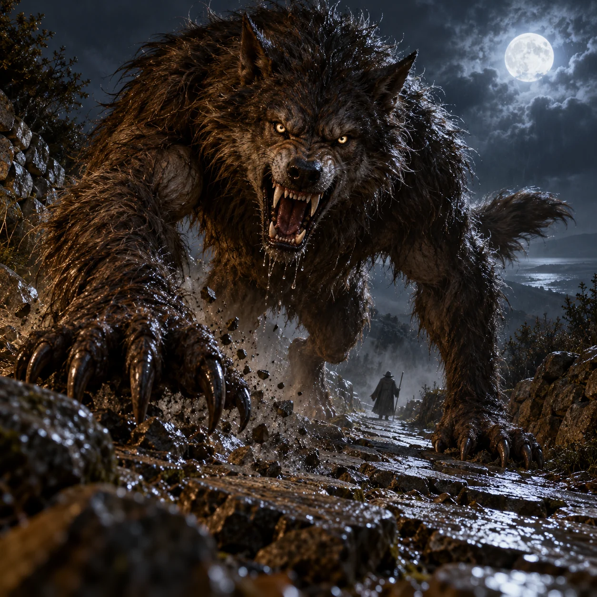
Huge werewolf variant, original design avoiding the modern municipal sculpture.
Aura: Huge werewolf c02 and road-blocking harmful animal c05 create direct physical menace.
Audit ciri dan sumber
- [object Object]
- [object Object]
- [object Object]
Native and 200px inspected: huge wolf-headed werewolf with two arms/two hind legs and one tail lunges along path, tiny pilgrim establishes documented scale, no invented magic, no gore/text or borrowed design. All seven Sangar checks pass.
Review sumberONE original square premium painterly cinematic Mitoloka illustration of Vákner, the huge werewolf-like harmful wild creature of the Galician pilgrimage road.
ANATOMY: one huge wolf-headed werewolf, exactly one head, two eyes, two powerful arms and two powerful hind legs, dense shaggy fur fully covering body, one wolf tail, no horns, wings or extra anatomy [vakner-c02] [vakner-c02, vakner-c05, vakner-c01]
MOMENT: Burst out across the narrow pilgrimage path toward camera, enormous forelimbs ripping into road stones, jaws open and eyes locked on viewer, fur thrown back by motion
POWER: No documented supernatural power; physically blocking and threatening the pilgrimage road as harmful creature [vakner-c05]
SCALE & CAMERA: extreme low angle; extreme low angle beneath wolf jaws, head/arms fill frame; tiny faraway cloaked pilgrim on path establishes documented huge size without focusing on victim
LIGHT & WEATHER: one dominant moonlight source, strong rim light, deep dark warm shadows, natural spray or dust appropriate to setting
SURFACE: rain-clotted dark brown fur, wet fangs, rugged claws, granite road and mud
SETTING: Galicia pilgrimage way toward Fisterra, dark rough stone path and scrub [vakner-c01]
MOOD: menacing, dangerous and imposing, never cute, calm or decorative
HARD CONSTRAINTS: no text, pseudoinscriptions, lettering, logo, border, frame or watermark; no extra heads, limbs or fingers; no borrowed film, game, anime or comic design; no nudity or explicit gore; no generic glow aura, neon outline or energy ribbons.
Vegetable Man
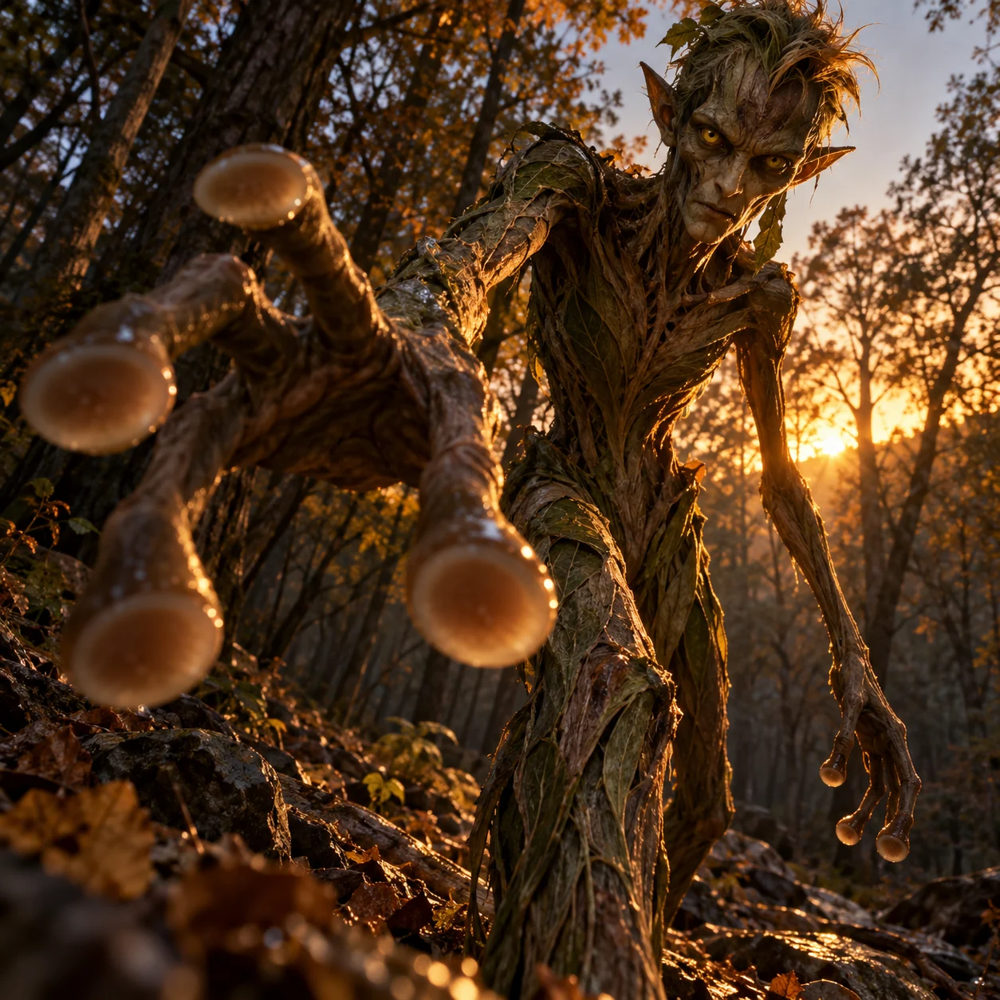
plant-bodied thin humanoid of the single 1968 account
Aura: Grip toward viewer with suction-cupped fingers; no magic or invented vines emitted from body vegetable-man-cryptid-c02,vegetable-man-cryptid-c05
Audit ciri dan sumber
- [object Object]
- [object Object]
- [object Object]
Native and200 inspected. Thin plant humanoid with yellow eyes pointed ears tuft and obvious fingertip suction discs reaches toward viewer c02/c05/c10. Two arms and two legs, covered plant body, no powers or text. All seven Sangar yes.
Review sumberONE original square premium painterly cinematic Mitoloka illustration of Vegetable Man, plant-bodied thin humanoid of the single 1968 account.
ANATOMY: One seven-foot humanoid with extremely thin plant-like torso and arms, semi-human face, pointed ears, yellow eyes, tuft of hair, suction cups on elongated fingertips; two arms two legs one head; bark-like opaque plant body without sexual anatomy [c02, c05, c10]
MOMENT: Step from dark brush toward viewer and extend one impossibly thin arm almost into lens, suction cups clearly visible under fingertips, yellow eyes stare down.
POWER: Grip toward viewer with suction-cupped fingers; no magic or invented vines emitted from body [c02, c05]
SCALE & CAMERA: extreme low angle; close foreshortened framing with subject filling most of the square, no invented giant size unless explicitly stated above.
LIGHT & WEATHER: one late low amber sun filtering through branches, sharp rim light, deep shadows; dark walnut and antique gold palette with one strong accent.
SURFACE: fibrous bark-like skin, fine leaflike ridges, damp suction discs.
SETTING: Wooded ground near Grant Town West Virginia during the reported return from groundhog hunting [c01, c04]
MOOD: menacing uncanny cryptid; dangerous or awe-inspiring and imposing, never cute, calm or decorative.
HARD CONSTRAINTS: no text, writing, lettering, inscriptions, pseudoinscriptions, symbols, logo, border, frame or watermark; no extra heads, limbs or fingers; no design borrowed from any film, game, anime or comic; no nudity or explicit gore; no generic glow aura, neon outline or energy ribbons. Entirely original living creature; no statue or toy.
Veles
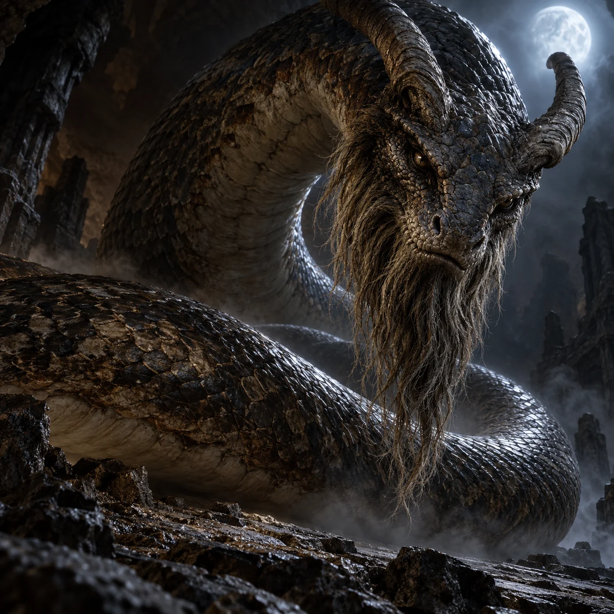
Veles, shown as the documented horned long-bearded serpent
Aura: Threat or awe through documented anatomy ['veles-c10'] and action []; no generic aura.
Audit ciri dan sumber
- [object Object]
- [object Object]
Native PNG and 200px thumbnail inspected. Subject dominates, active threatening or awe-inspiring moment, claim-mapped anatomy/effects/setting, no text, watermark or generic aura; all seven Sangar checks pass.
Review sumberONE original square premium painterly cinematic Mitoloka illustration of Veles, shown as the documented horned long-bearded serpent.
ANATOMY: Exactly one horned serpent, one reptilian head, two natural eyes, two horns, one long coarse beard hanging below jaw, thick long scaled limbless body; no wings or humanoid torso. [veles-c10]
MOMENT: Rise from deep underworld shadow and arch the horned bearded head down toward viewer, weight of coils presses into stone.
POWER: No visible magical effect; awe through documented serpent anatomy and underworld presence only. []
SCALE & CAMERA: Tight extreme low angle; bearded horned head and coils fill frame without asserting undocumented giant scale.
LIGHT & WEATHER: one dominant cold moonlight source, sharp rim light, deep warm walnut shadows, natural dust or mist.
SURFACE: tactile coarse weathered surfaces, rich painterly texture, no plastic finish.
SETTING: Dark chthonic underworld, plain shadowed stone ground, no world-tree battle or lightning. [veles-c01]
MOOD: menacing or awe-inspiring, dangerous and imposing, never cute, calm or decorative.
HARD CONSTRAINTS: no text, pseudoinscriptions, lettering, logo, border, frame or watermark; no extra heads, limbs or fingers; no design borrowed from film, game, anime or comic; opaque full clothing for humanoids; no nudity or explicit gore; no generic glow aura, neon outline, energy ribbons or magic symbols.
Vorota beast
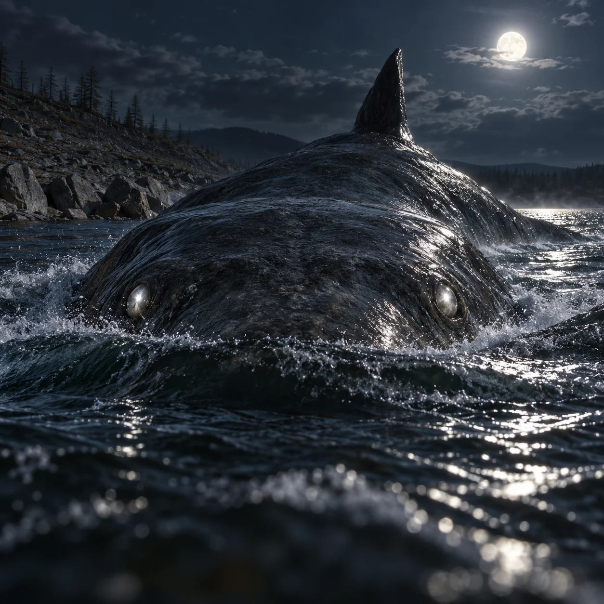
1953 report: oblong grey-black surface body, reflective eye-like spots, six-foot head and dorsal fin.
Aura: Reported huge oblong mass c04/c05 and near-surface movement c08 create menace without invented anatomy or magic.
Audit ciri dan sumber
- [object Object]
- [object Object]
- [object Object]
Native and 200px inspected: enormous oblong grey-black body, broad head, two symmetrical reflective eye-like spots and one fin on hump clearly dominate bow wave. No invented mouth/teeth/limbs or magic, no text. All seven Sangar checks pass.
Review sumberONE original square premium painterly cinematic Mitoloka illustration of Vorota beast, the huge grey-black oblong lake animal reported by Siberian geologists.
ANATOMY: one wide blunt head about six feet across, two symmetrical bright reflective eye-like spots, one oblong grey-black body thirty to forty feet long, one large fin rising from a dorsal hump; all other anatomy and mouth remain underwater, no teeth, horns, legs or invented neck [vorota-beast-c04,vorota-beast-c05] [vorota-beast-c04, vorota-beast-c05, vorota-beast-c08, vorota-beast-c01]
MOMENT: Drive straight toward camera just below the surface, broad wet brow and pair of eye-like spots cutting through a rising bow wave, immense humped back and tall fin receding behind
POWER: No documented supernatural power; heavy swimming mass raises a physically natural bow wave only [vorota-beast-c08]
SCALE & CAMERA: extreme low angle; extreme low lake-waterline view, six-foot broad head fills frame, huge long body behind, shore boulders and small distant bank trees make reported size legible
LIGHT & WEATHER: one dominant moonlight source, strong rim light, deep dark warm shadows, natural spray or dust appropriate to setting
SURFACE: smooth dark grey-black wet skin, cold water sheets, slick hump and fin
SETTING: Lake Vorota on the eastern Siberian Sordongnokh plateau, barren stony shore and sparse far trees [vorota-beast-c01]
MOOD: menacing, dangerous and imposing, never cute, calm or decorative
HARD CONSTRAINTS: no text, pseudoinscriptions, lettering, logo, border, frame or watermark; no extra heads, limbs or fingers; no borrowed film, game, anime or comic design; no nudity or explicit gore; no generic glow aura, neon outline or energy ribbons.
Wakka-us Kamuy
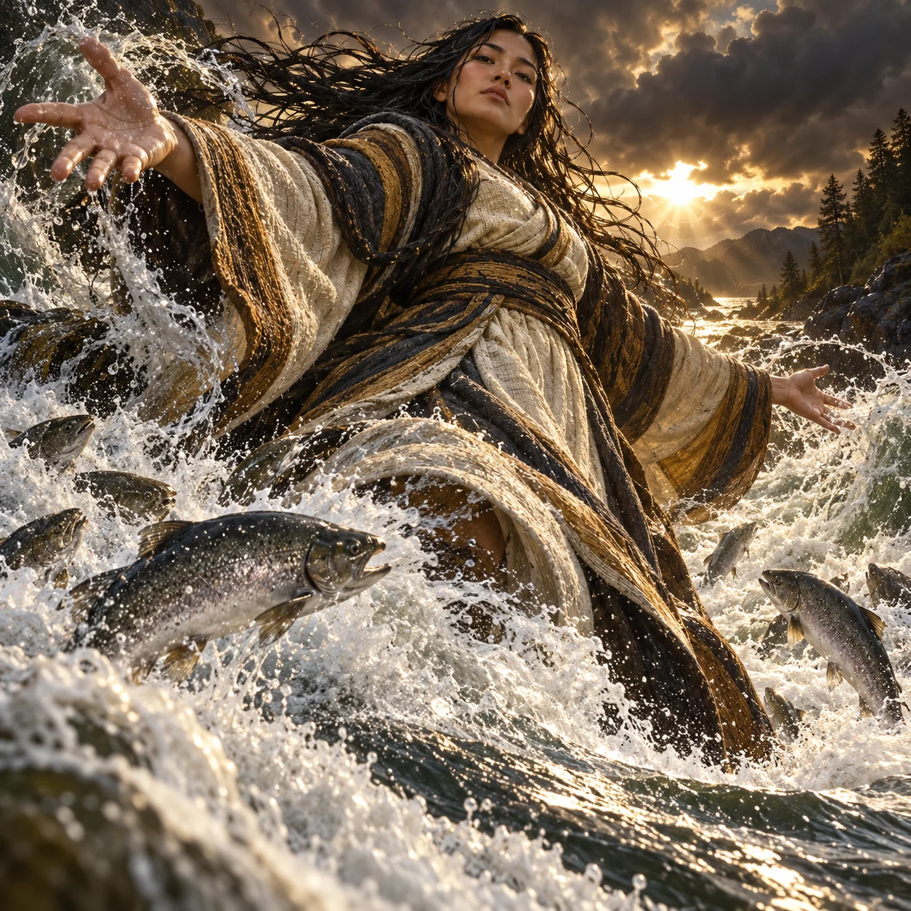
benevolent long-haired chief river goddess in active dance
Aura: Dance while freshwater currents surge around her lower robe, streams converge and bend physically within her river domain; salmon released from confinement leap downstream without energy trails wakka-us-kamuy-c01,wakka-us-kamuy-c05,wakka-us-kamuy-c07
Audit ciri dan sumber
- [object Object]
- [object Object]
- [object Object]
Native and200 inspected. Long-haired fully robed goddess mid-dance c03 commands surging freshwater domain c01/c07, salmon released c05 leap around robe. Imposing reverent frame, two arms, no extra anatomy or generic light aura; no text. All seven Sangar yes.
Review sumberONE original square premium painterly cinematic Mitoloka illustration of Wakka-us Kamuy, benevolent long-haired chief river goddess in active dance.
ANATOMY: One long-haired female freshwater goddess, one head two eyes two arms, fully opaque layered plain woven robes covering body from shoulders to ankles; no crown weapons or invented ornaments [c03]
MOMENT: Sweep both arms outward mid-dance as river water surges below, long hair streaming, look down toward viewer with commanding compassionate intensity; fill frame.
POWER: Dance while freshwater currents surge around her lower robe, streams converge and bend physically within her river domain; salmon released from confinement leap downstream without energy trails [c01, c05, c07]
SCALE & CAMERA: extreme low angle; close foreshortened framing with subject filling most of the square, no invented giant size unless explicitly stated above.
LIGHT & WEATHER: one low golden sun behind dark raincloud, sharp rim light, deep shadows; dark walnut and antique gold palette with one strong accent.
SURFACE: thick woven opaque robes, wet long hair, white river foam, silver salmon scales.
SETTING: Freshwater river valley with rushing rapids, dark banks and distant trees [c07, c08, c11]
MOOD: reverent awe-inspiring benevolent chief water goddess, never evil; dangerous or awe-inspiring and imposing, never cute, calm or decorative.
HARD CONSTRAINTS: no text, writing, lettering, inscriptions, pseudoinscriptions, symbols, logo, border, frame or watermark; no extra heads, limbs or fingers; no design borrowed from any film, game, anime or comic; no nudity or explicit gore; no generic glow aura, neon outline or energy ribbons. Entirely original living creature; no statue or toy.
狙如
Menunggu gambar yang lolos audit
長蛇
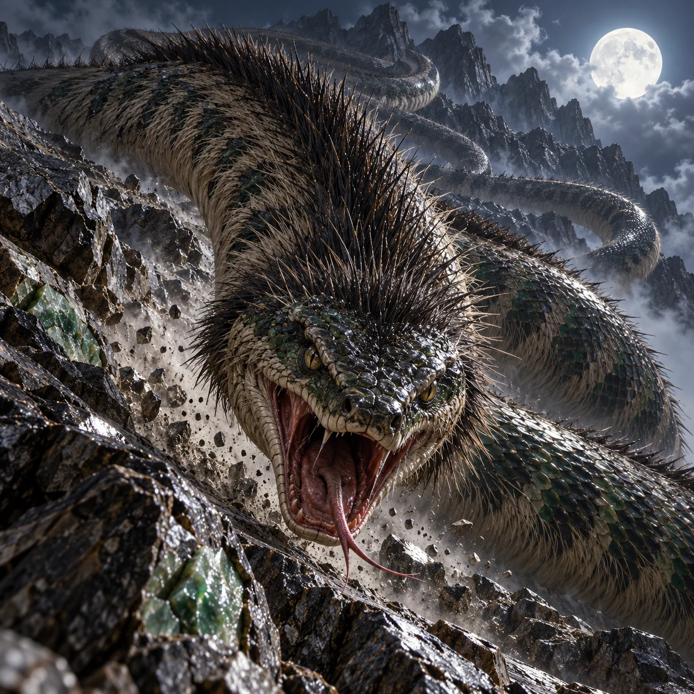
Long green-marked serpent with pig bristles on bare jade-bearing Mount Daxian.
Aura: Bristled snake form c02 and extraordinary long beast-swallowing variant c08 create threat without aura.
Audit ciri dan sumber
- [object Object]
- [object Object]
Native and 200px inspected: single long limbless green-marked serpent with clear piglike body bristles and mane dominates bare jade-bearing mountain, forceful downhill movement. No invented appendages/magic, no text or borrowed design. All seven Sangar checks pass.
Review sumberONE original square premium painterly cinematic Mitoloka illustration of Changshe, the legendary long serpent of the Shan Hai Jing, covered with piglike bristles.
ANATOMY: one extraordinarily long limbless serpent, one head, two eyes, entire body covered in coarse stiff piglike bristles between green dark scale markings; dark boar-like bristle mane along back but snake head NOT boar head; no legs, horns, wings, extra heads or tusks [wd-q10564448-c01,wd-q10564448-c02,wd-q10564448-c08] [wd-q10564448-c01, wd-q10564448-c02, wd-q10564448-c08, wd-q10564448-c04, wd-q10564448-c06]
MOMENT: Pour the immense coiled body down bare mountain rock toward camera, head low and open jaws confronting viewer, stiff bristles standing sharply as belly grinds grit from stones
POWER: No documented visible magic; the beast-swallowing long serpent c08 creates menace through enormous length, bristles and natural motion only
SCALE & CAMERA: extreme low angle; extreme low close view of bristling snake head and coils filling square; long body loops across mountain behind at documented extraordinary length
LIGHT & WEATHER: one dominant moonlight source, strong rim light, deep dark warm shadows, natural spray or dust appropriate to setting
SURFACE: coarse black pig bristles, wet green-black scales, rough bare stone and jade-bearing rock
SETTING: Mount Daxian, bare of vegetation, with jade in its lower slopes [wd-q10564448-c04,wd-q10564448-c06]
MOOD: menacing, dangerous and imposing, never cute, calm or decorative
HARD CONSTRAINTS: no text, pseudoinscriptions, lettering, logo, border, frame or watermark; no extra heads, limbs or fingers; no borrowed film, game, anime or comic design; no nudity or explicit gore; no generic glow aura, neon outline or energy ribbons.
雍和
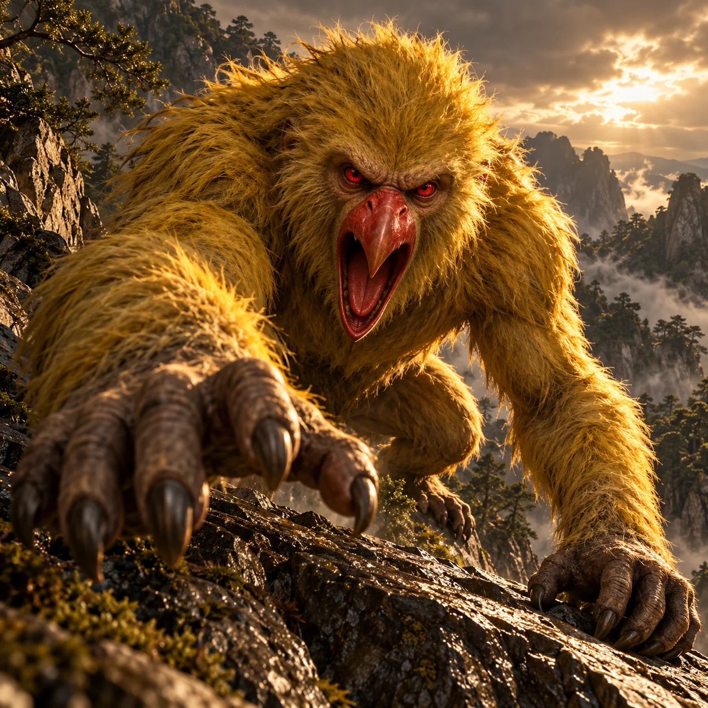
yellow ape-bodied Yonghe with red eyes and red beak
Aura: No literal panic aura; threaten through red-eyed stare, looming ape posture and beak, no famine weather or beams wd-q10565813-c01,wd-q10565813-c03
Audit ciri dan sumber
- [object Object]
- [object Object]
- [object Object]
Native and200 inspected: yellow-furred ape with red eyes and red beak c03 lunges from rocky Mount Feng. One head four limbs, no wings or magic; fear through appearance, no text. All seven Sangar yes.
Review sumberONE original square premium painterly cinematic Mitoloka illustration of 雍和, yellow ape-bodied Yonghe with red eyes and red beak.
ANATOMY: One living ape-like beast with yellow fur, two red eyes, a red beak, one head, two arms two legs; no wings or additional animals [c01, c02, c03]
MOMENT: Lunge down a rock ledge toward viewer with both heavy ape arms reaching and open red beak clearly visible, fur bristling.
POWER: No literal panic aura; threaten through red-eyed stare, looming ape posture and beak, no famine weather or beams [c01, c03]
SCALE & CAMERA: extreme low angle; close foreshortened framing with subject filling most of the square, no invented giant size unless explicitly stated above.
LIGHT & WEATHER: one low warm sun slit through overcast, sharp rim light, deep shadows; dark walnut and antique gold palette with one strong accent.
SURFACE: matted ochre-yellow ape fur, red keratin beak, slick dark rock.
SETTING: Mount Feng rocky tree-covered slope [c03, c06]
MOOD: menacing fear-omen beast; dangerous or awe-inspiring and imposing, never cute, calm or decorative.
HARD CONSTRAINTS: no text, writing, lettering, inscriptions, pseudoinscriptions, symbols, logo, border, frame or watermark; no extra heads, limbs or fingers; no design borrowed from any film, game, anime or comic; no nudity or explicit gore; no generic glow aura, neon outline or energy ribbons. Entirely original living creature; no statue or toy.